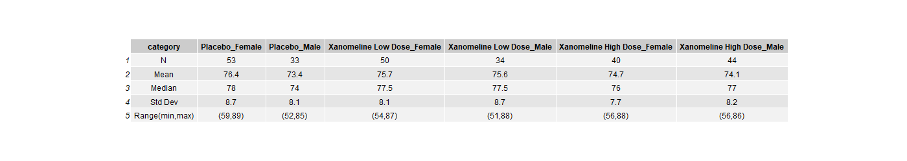
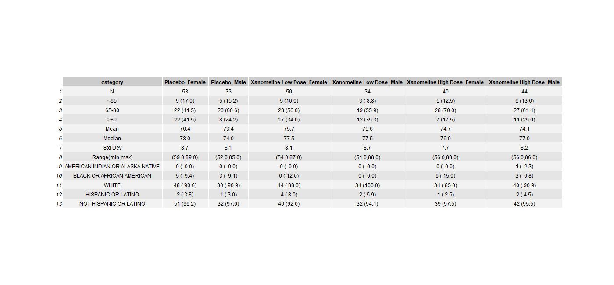

In this document you’ll see code chunks (typically on a light grey background) and text. This is an example of an “Rmarkdown” document. You can write and run code within the document and the results will be presented underneath each code chunk. You should follow the instructions as written in the text, amending the code chunks, then running them to produce the outputs as instructed.
4.2 Data Source
For these projects we are using anonymized CDISC datasets, which can be found here: https://github.com/phuse-org/phuse-scripts/tree/master/data/adam/cdisc
4.3 R objects and functions
Within R we typically use objects of different types e.g. data, vectors, lists etc. and then we apply functions. Functions have the construct <function_name>(<argument1>= , <argument2> = ). When you use functions, you don’t have to use the argument name and instead you can implicitly refer to the arguments by position e.g. myFunction(foo, 1, "bar") passes in the R object foo as the value for argument 1; argument 2 takes the value 1 and argument 3 takes the character value "bar". While you’re learning R we recommend that you explicitly name and use the arguments in functions, except where functions only have one argument. You can use the tab-completion in the RStudio IDE to help complete function call arguments. To see the arguments of a function type ?<functionName> in the Console.
4.4 Start the mini project
5 Build familiarity with R coding & generate summary statistics of continuous variables by Gender
In this project we are working towards creating a demography summary table like this one: .
5.1 Aims:
Read in ADSL SAS (xpt) dataset
Subset for Efficacy Analysis Population
Calculate summary statistics within grouping variables
Transpose the resulting data to prepare for tabulation
In this MiniProject we recap use of the following functions (from MiniProject 1 & 2):
library
read_sas
filter
group_by
mutate
select
round
format
pivot_wider
and we introduce the following functions:
summarize
pivot_longer
ungroup
The following steps will load the packages tidyverse & rio. You need to load packages before using the functions and content in them, and it’s best to do so at the beginning of a program / script. Run the chunk below by clicking on the green arrow to the right of the code chunk. To check what package repository you are using, run .libPaths() at the R Console.
library(tidyverse)
── Attaching core tidyverse packages ──────────────────────── tidyverse 2.0.0 ──
✔ dplyr 1.1.4 ✔ readr 2.1.5
✔ forcats 1.0.0 ✔ stringr 1.5.1
✔ ggplot2 3.5.2 ✔ tibble 3.3.0
✔ lubridate 1.9.4 ✔ tidyr 1.3.1
✔ purrr 1.0.4
── Conflicts ────────────────────────────────────────── tidyverse_conflicts() ──
✖ dplyr::filter() masks stats::filter()
✖ dplyr::lag() masks stats::lag()
ℹ Use the conflicted package (<http://conflicted.r-lib.org/>) to force all conflicts to become errors
library(rio)
Read in the CDISC adsl data from the GitHub location (https://github.com/phuse-org/phuse-scripts/raw/master/data/adam/cdisc/adsl.xpt) and assign this to an object in R using the assignment operator <-. Make sure that the URL location is a character string by enclosing it in " ". The rio package has a function called import that reads data into R and infers the data type from the file name. The first argument of that function is file. Paste the file path / URL above after the file= argument in the code below, then run the chunk using the green arrow.
STUDYID USUBJID SUBJID SITEID SITEGR1 ARM
1 CDISCPILOT01 01-701-1015 1015 701 701 Placebo
2 CDISCPILOT01 01-701-1023 1023 701 701 Placebo
3 CDISCPILOT01 01-701-1028 1028 701 701 Xanomeline High Dose
4 CDISCPILOT01 01-701-1033 1033 701 701 Xanomeline Low Dose
5 CDISCPILOT01 01-701-1034 1034 701 701 Xanomeline High Dose
6 CDISCPILOT01 01-701-1047 1047 701 701 Placebo
7 CDISCPILOT01 01-701-1097 1097 701 701 Xanomeline Low Dose
8 CDISCPILOT01 01-701-1111 1111 701 701 Xanomeline Low Dose
9 CDISCPILOT01 01-701-1115 1115 701 701 Xanomeline Low Dose
10 CDISCPILOT01 01-701-1118 1118 701 701 Placebo
11 CDISCPILOT01 01-701-1130 1130 701 701 Placebo
12 CDISCPILOT01 01-701-1133 1133 701 701 Xanomeline High Dose
13 CDISCPILOT01 01-701-1146 1146 701 701 Xanomeline High Dose
14 CDISCPILOT01 01-701-1148 1148 701 701 Xanomeline High Dose
15 CDISCPILOT01 01-701-1153 1153 701 701 Placebo
16 CDISCPILOT01 01-701-1180 1180 701 701 Xanomeline High Dose
17 CDISCPILOT01 01-701-1181 1181 701 701 Xanomeline High Dose
18 CDISCPILOT01 01-701-1188 1188 701 701 Xanomeline Low Dose
19 CDISCPILOT01 01-701-1192 1192 701 701 Xanomeline Low Dose
20 CDISCPILOT01 01-701-1203 1203 701 701 Placebo
21 CDISCPILOT01 01-701-1211 1211 701 701 Xanomeline Low Dose
22 CDISCPILOT01 01-701-1234 1234 701 701 Placebo
23 CDISCPILOT01 01-701-1239 1239 701 701 Xanomeline High Dose
24 CDISCPILOT01 01-701-1275 1275 701 701 Xanomeline High Dose
25 CDISCPILOT01 01-701-1287 1287 701 701 Xanomeline High Dose
26 CDISCPILOT01 01-701-1294 1294 701 701 Xanomeline Low Dose
27 CDISCPILOT01 01-701-1302 1302 701 701 Xanomeline High Dose
28 CDISCPILOT01 01-701-1317 1317 701 701 Xanomeline Low Dose
29 CDISCPILOT01 01-701-1324 1324 701 701 Xanomeline Low Dose
30 CDISCPILOT01 01-701-1341 1341 701 701 Xanomeline Low Dose
31 CDISCPILOT01 01-701-1345 1345 701 701 Placebo
32 CDISCPILOT01 01-701-1360 1360 701 701 Xanomeline High Dose
33 CDISCPILOT01 01-701-1363 1363 701 701 Placebo
34 CDISCPILOT01 01-701-1383 1383 701 701 Xanomeline High Dose
35 CDISCPILOT01 01-701-1387 1387 701 701 Placebo
36 CDISCPILOT01 01-701-1392 1392 701 701 Placebo
37 CDISCPILOT01 01-701-1415 1415 701 701 Placebo
38 CDISCPILOT01 01-701-1429 1429 701 701 Xanomeline Low Dose
39 CDISCPILOT01 01-701-1440 1440 701 701 Placebo
40 CDISCPILOT01 01-701-1442 1442 701 701 Xanomeline Low Dose
41 CDISCPILOT01 01-701-1444 1444 701 701 Xanomeline High Dose
42 CDISCPILOT01 01-702-1082 1082 702 900 Xanomeline Low Dose
43 CDISCPILOT01 01-703-1042 1042 703 703 Placebo
44 CDISCPILOT01 01-703-1076 1076 703 703 Xanomeline High Dose
45 CDISCPILOT01 01-703-1086 1086 703 703 Xanomeline Low Dose
46 CDISCPILOT01 01-703-1096 1096 703 703 Placebo
47 CDISCPILOT01 01-703-1100 1100 703 703 Placebo
48 CDISCPILOT01 01-703-1119 1119 703 703 Xanomeline Low Dose
49 CDISCPILOT01 01-703-1175 1175 703 703 Placebo
50 CDISCPILOT01 01-703-1182 1182 703 703 Xanomeline Low Dose
51 CDISCPILOT01 01-703-1197 1197 703 703 Xanomeline Low Dose
52 CDISCPILOT01 01-703-1210 1210 703 703 Placebo
53 CDISCPILOT01 01-703-1258 1258 703 703 Xanomeline High Dose
54 CDISCPILOT01 01-703-1279 1279 703 703 Xanomeline Low Dose
55 CDISCPILOT01 01-703-1295 1295 703 703 Xanomeline High Dose
56 CDISCPILOT01 01-703-1299 1299 703 703 Placebo
57 CDISCPILOT01 01-703-1335 1335 703 703 Xanomeline High Dose
58 CDISCPILOT01 01-703-1379 1379 703 703 Xanomeline Low Dose
59 CDISCPILOT01 01-703-1403 1403 703 703 Xanomeline High Dose
60 CDISCPILOT01 01-703-1439 1439 703 703 Xanomeline High Dose
61 CDISCPILOT01 01-704-1008 1008 704 704 Xanomeline High Dose
62 CDISCPILOT01 01-704-1009 1009 704 704 Xanomeline Low Dose
63 CDISCPILOT01 01-704-1010 1010 704 704 Placebo
64 CDISCPILOT01 01-704-1017 1017 704 704 Xanomeline High Dose
65 CDISCPILOT01 01-704-1025 1025 704 704 Xanomeline Low Dose
66 CDISCPILOT01 01-704-1065 1065 704 704 Xanomeline High Dose
67 CDISCPILOT01 01-704-1074 1074 704 704 Xanomeline High Dose
68 CDISCPILOT01 01-704-1093 1093 704 704 Xanomeline High Dose
69 CDISCPILOT01 01-704-1114 1114 704 704 Xanomeline Low Dose
70 CDISCPILOT01 01-704-1120 1120 704 704 Xanomeline Low Dose
71 CDISCPILOT01 01-704-1127 1127 704 704 Placebo
72 CDISCPILOT01 01-704-1135 1135 704 704 Xanomeline Low Dose
73 CDISCPILOT01 01-704-1164 1164 704 704 Placebo
74 CDISCPILOT01 01-704-1218 1218 704 704 Xanomeline Low Dose
75 CDISCPILOT01 01-704-1233 1233 704 704 Placebo
76 CDISCPILOT01 01-704-1241 1241 704 704 Xanomeline High Dose
77 CDISCPILOT01 01-704-1260 1260 704 704 Placebo
78 CDISCPILOT01 01-704-1266 1266 704 704 Xanomeline High Dose
79 CDISCPILOT01 01-704-1323 1323 704 704 Xanomeline Low Dose
80 CDISCPILOT01 01-704-1325 1325 704 704 Xanomeline Low Dose
81 CDISCPILOT01 01-704-1332 1332 704 704 Xanomeline High Dose
82 CDISCPILOT01 01-704-1351 1351 704 704 Placebo
83 CDISCPILOT01 01-704-1388 1388 704 704 Placebo
84 CDISCPILOT01 01-704-1435 1435 704 704 Placebo
85 CDISCPILOT01 01-704-1445 1445 704 704 Placebo
86 CDISCPILOT01 01-705-1018 1018 705 705 Placebo
87 CDISCPILOT01 01-705-1031 1031 705 705 Xanomeline Low Dose
88 CDISCPILOT01 01-705-1059 1059 705 705 Placebo
89 CDISCPILOT01 01-705-1186 1186 705 705 Placebo
90 CDISCPILOT01 01-705-1199 1199 705 705 Xanomeline Low Dose
91 CDISCPILOT01 01-705-1280 1280 705 705 Xanomeline High Dose
92 CDISCPILOT01 01-705-1281 1281 705 705 Xanomeline High Dose
93 CDISCPILOT01 01-705-1282 1282 705 705 Placebo
94 CDISCPILOT01 01-705-1292 1292 705 705 Xanomeline Low Dose
95 CDISCPILOT01 01-705-1303 1303 705 705 Xanomeline High Dose
96 CDISCPILOT01 01-705-1310 1310 705 705 Xanomeline High Dose
97 CDISCPILOT01 01-705-1349 1349 705 705 Placebo
98 CDISCPILOT01 01-705-1377 1377 705 705 Xanomeline High Dose
99 CDISCPILOT01 01-705-1382 1382 705 705 Xanomeline High Dose
100 CDISCPILOT01 01-705-1393 1393 705 705 Xanomeline Low Dose
101 CDISCPILOT01 01-705-1431 1431 705 705 Xanomeline Low Dose
102 CDISCPILOT01 01-706-1041 1041 706 900 Placebo
103 CDISCPILOT01 01-706-1049 1049 706 900 Xanomeline High Dose
104 CDISCPILOT01 01-706-1384 1384 706 900 Xanomeline Low Dose
105 CDISCPILOT01 01-707-1037 1037 707 900 Xanomeline Low Dose
106 CDISCPILOT01 01-707-1206 1206 707 900 Placebo
107 CDISCPILOT01 01-708-1019 1019 708 708 Xanomeline Low Dose
108 CDISCPILOT01 01-708-1032 1032 708 708 Xanomeline Low Dose
109 CDISCPILOT01 01-708-1084 1084 708 708 Xanomeline Low Dose
110 CDISCPILOT01 01-708-1087 1087 708 708 Placebo
111 CDISCPILOT01 01-708-1158 1158 708 708 Placebo
112 CDISCPILOT01 01-708-1171 1171 708 708 Placebo
113 CDISCPILOT01 01-708-1178 1178 708 708 Xanomeline High Dose
114 CDISCPILOT01 01-708-1213 1213 708 708 Xanomeline High Dose
115 CDISCPILOT01 01-708-1216 1216 708 708 Xanomeline High Dose
116 CDISCPILOT01 01-708-1236 1236 708 708 Xanomeline High Dose
117 CDISCPILOT01 01-708-1253 1253 708 708 Placebo
118 CDISCPILOT01 01-708-1272 1272 708 708 Xanomeline Low Dose
119 CDISCPILOT01 01-708-1286 1286 708 708 Placebo
120 CDISCPILOT01 01-708-1296 1296 708 708 Placebo
121 CDISCPILOT01 01-708-1297 1297 708 708 Xanomeline Low Dose
122 CDISCPILOT01 01-708-1316 1316 708 708 Placebo
123 CDISCPILOT01 01-708-1336 1336 708 708 Xanomeline High Dose
124 CDISCPILOT01 01-708-1342 1342 708 708 Placebo
125 CDISCPILOT01 01-708-1347 1347 708 708 Xanomeline High Dose
126 CDISCPILOT01 01-708-1348 1348 708 708 Xanomeline Low Dose
127 CDISCPILOT01 01-708-1353 1353 708 708 Xanomeline Low Dose
128 CDISCPILOT01 01-708-1372 1372 708 708 Xanomeline High Dose
129 CDISCPILOT01 01-708-1378 1378 708 708 Placebo
130 CDISCPILOT01 01-708-1406 1406 708 708 Xanomeline High Dose
131 CDISCPILOT01 01-708-1428 1428 708 708 Xanomeline Low Dose
132 CDISCPILOT01 01-709-1001 1001 709 709 Placebo
133 CDISCPILOT01 01-709-1007 1007 709 709 Xanomeline Low Dose
134 CDISCPILOT01 01-709-1020 1020 709 709 Xanomeline Low Dose
135 CDISCPILOT01 01-709-1029 1029 709 709 Xanomeline High Dose
136 CDISCPILOT01 01-709-1081 1081 709 709 Xanomeline Low Dose
137 CDISCPILOT01 01-709-1088 1088 709 709 Placebo
138 CDISCPILOT01 01-709-1099 1099 709 709 Xanomeline High Dose
139 CDISCPILOT01 01-709-1102 1102 709 709 Xanomeline Low Dose
140 CDISCPILOT01 01-709-1168 1168 709 709 Xanomeline High Dose
141 CDISCPILOT01 01-709-1217 1217 709 709 Xanomeline Low Dose
142 CDISCPILOT01 01-709-1238 1238 709 709 Xanomeline High Dose
143 CDISCPILOT01 01-709-1259 1259 709 709 Placebo
144 CDISCPILOT01 01-709-1285 1285 709 709 Xanomeline Low Dose
145 CDISCPILOT01 01-709-1301 1301 709 709 Placebo
146 CDISCPILOT01 01-709-1306 1306 709 709 Placebo
147 CDISCPILOT01 01-709-1309 1309 709 709 Xanomeline High Dose
148 CDISCPILOT01 01-709-1312 1312 709 709 Placebo
149 CDISCPILOT01 01-709-1326 1326 709 709 Xanomeline Low Dose
150 CDISCPILOT01 01-709-1329 1329 709 709 Xanomeline High Dose
151 CDISCPILOT01 01-709-1339 1339 709 709 Placebo
152 CDISCPILOT01 01-709-1424 1424 709 709 Xanomeline High Dose
153 CDISCPILOT01 01-710-1002 1002 710 710 Xanomeline Low Dose
154 CDISCPILOT01 01-710-1006 1006 710 710 Xanomeline High Dose
155 CDISCPILOT01 01-710-1021 1021 710 710 Xanomeline High Dose
156 CDISCPILOT01 01-710-1027 1027 710 710 Placebo
157 CDISCPILOT01 01-710-1045 1045 710 710 Xanomeline Low Dose
158 CDISCPILOT01 01-710-1053 1053 710 710 Xanomeline Low Dose
159 CDISCPILOT01 01-710-1060 1060 710 710 Placebo
160 CDISCPILOT01 01-710-1070 1070 710 710 Xanomeline High Dose
161 CDISCPILOT01 01-710-1077 1077 710 710 Placebo
162 CDISCPILOT01 01-710-1078 1078 710 710 Placebo
163 CDISCPILOT01 01-710-1083 1083 710 710 Placebo
164 CDISCPILOT01 01-710-1137 1137 710 710 Xanomeline High Dose
165 CDISCPILOT01 01-710-1142 1142 710 710 Xanomeline High Dose
166 CDISCPILOT01 01-710-1154 1154 710 710 Xanomeline Low Dose
167 CDISCPILOT01 01-710-1166 1166 710 710 Xanomeline Low Dose
168 CDISCPILOT01 01-710-1183 1183 710 710 Placebo
169 CDISCPILOT01 01-710-1187 1187 710 710 Xanomeline High Dose
170 CDISCPILOT01 01-710-1235 1235 710 710 Xanomeline Low Dose
171 CDISCPILOT01 01-710-1249 1249 710 710 Xanomeline High Dose
172 CDISCPILOT01 01-710-1264 1264 710 710 Placebo
173 CDISCPILOT01 01-710-1270 1270 710 710 Xanomeline Low Dose
174 CDISCPILOT01 01-710-1271 1271 710 710 Placebo
175 CDISCPILOT01 01-710-1278 1278 710 710 Xanomeline High Dose
176 CDISCPILOT01 01-710-1300 1300 710 710 Xanomeline Low Dose
177 CDISCPILOT01 01-710-1314 1314 710 710 Placebo
178 CDISCPILOT01 01-710-1315 1315 710 710 Placebo
179 CDISCPILOT01 01-710-1354 1354 710 710 Xanomeline High Dose
180 CDISCPILOT01 01-710-1358 1358 710 710 Xanomeline Low Dose
181 CDISCPILOT01 01-710-1368 1368 710 710 Placebo
182 CDISCPILOT01 01-710-1385 1385 710 710 Xanomeline Low Dose
183 CDISCPILOT01 01-710-1408 1408 710 710 Xanomeline High Dose
184 CDISCPILOT01 01-711-1012 1012 711 900 Xanomeline High Dose
185 CDISCPILOT01 01-711-1036 1036 711 900 Placebo
186 CDISCPILOT01 01-711-1143 1143 711 900 Xanomeline Low Dose
187 CDISCPILOT01 01-711-1433 1433 711 900 Xanomeline High Dose
188 CDISCPILOT01 01-713-1043 1043 713 713 Xanomeline Low Dose
189 CDISCPILOT01 01-713-1073 1073 713 713 Xanomeline Low Dose
190 CDISCPILOT01 01-713-1106 1106 713 713 Xanomeline High Dose
191 CDISCPILOT01 01-713-1141 1141 713 713 Xanomeline High Dose
192 CDISCPILOT01 01-713-1179 1179 713 713 Placebo
193 CDISCPILOT01 01-713-1209 1209 713 713 Xanomeline High Dose
194 CDISCPILOT01 01-713-1256 1256 713 713 Placebo
195 CDISCPILOT01 01-713-1269 1269 713 713 Placebo
196 CDISCPILOT01 01-713-1448 1448 713 713 Xanomeline Low Dose
197 CDISCPILOT01 01-714-1035 1035 714 900 Placebo
198 CDISCPILOT01 01-714-1068 1068 714 900 Xanomeline Low Dose
199 CDISCPILOT01 01-714-1195 1195 714 900 Xanomeline Low Dose
200 CDISCPILOT01 01-714-1288 1288 714 900 Xanomeline High Dose
201 CDISCPILOT01 01-714-1375 1375 714 900 Placebo
202 CDISCPILOT01 01-714-1425 1425 714 900 Xanomeline High Dose
203 CDISCPILOT01 01-715-1085 1085 715 900 Xanomeline Low Dose
204 CDISCPILOT01 01-715-1107 1107 715 900 Xanomeline Low Dose
205 CDISCPILOT01 01-715-1155 1155 715 900 Placebo
206 CDISCPILOT01 01-715-1207 1207 715 900 Placebo
207 CDISCPILOT01 01-715-1319 1319 715 900 Xanomeline High Dose
208 CDISCPILOT01 01-715-1321 1321 715 900 Xanomeline High Dose
209 CDISCPILOT01 01-715-1397 1397 715 900 Placebo
210 CDISCPILOT01 01-715-1405 1405 715 900 Xanomeline Low Dose
211 CDISCPILOT01 01-716-1024 1024 716 716 Placebo
212 CDISCPILOT01 01-716-1026 1026 716 716 Placebo
213 CDISCPILOT01 01-716-1030 1030 716 716 Xanomeline High Dose
214 CDISCPILOT01 01-716-1044 1044 716 716 Placebo
215 CDISCPILOT01 01-716-1063 1063 716 716 Xanomeline Low Dose
216 CDISCPILOT01 01-716-1071 1071 716 716 Xanomeline High Dose
217 CDISCPILOT01 01-716-1094 1094 716 716 Xanomeline Low Dose
218 CDISCPILOT01 01-716-1103 1103 716 716 Xanomeline Low Dose
219 CDISCPILOT01 01-716-1108 1108 716 716 Placebo
220 CDISCPILOT01 01-716-1151 1151 716 716 Xanomeline Low Dose
221 CDISCPILOT01 01-716-1157 1157 716 716 Xanomeline Low Dose
222 CDISCPILOT01 01-716-1160 1160 716 716 Placebo
223 CDISCPILOT01 01-716-1167 1167 716 716 Xanomeline Low Dose
224 CDISCPILOT01 01-716-1177 1177 716 716 Placebo
225 CDISCPILOT01 01-716-1189 1189 716 716 Xanomeline High Dose
226 CDISCPILOT01 01-716-1229 1229 716 716 Xanomeline High Dose
227 CDISCPILOT01 01-716-1298 1298 716 716 Xanomeline Low Dose
228 CDISCPILOT01 01-716-1308 1308 716 716 Placebo
229 CDISCPILOT01 01-716-1311 1311 716 716 Xanomeline Low Dose
230 CDISCPILOT01 01-716-1364 1364 716 716 Xanomeline High Dose
231 CDISCPILOT01 01-716-1373 1373 716 716 Xanomeline High Dose
232 CDISCPILOT01 01-716-1418 1418 716 716 Xanomeline High Dose
233 CDISCPILOT01 01-716-1441 1441 716 716 Placebo
234 CDISCPILOT01 01-716-1447 1447 716 716 Xanomeline High Dose
235 CDISCPILOT01 01-717-1004 1004 717 900 Xanomeline Low Dose
236 CDISCPILOT01 01-717-1109 1109 717 900 Xanomeline High Dose
237 CDISCPILOT01 01-717-1174 1174 717 900 Xanomeline High Dose
238 CDISCPILOT01 01-717-1201 1201 717 900 Placebo
239 CDISCPILOT01 01-717-1344 1344 717 900 Placebo
240 CDISCPILOT01 01-717-1357 1357 717 900 Xanomeline High Dose
241 CDISCPILOT01 01-717-1446 1446 717 900 Xanomeline Low Dose
242 CDISCPILOT01 01-718-1066 1066 718 718 Xanomeline Low Dose
243 CDISCPILOT01 01-718-1079 1079 718 718 Xanomeline Low Dose
244 CDISCPILOT01 01-718-1101 1101 718 718 Xanomeline High Dose
245 CDISCPILOT01 01-718-1139 1139 718 718 Placebo
246 CDISCPILOT01 01-718-1150 1150 718 718 Placebo
247 CDISCPILOT01 01-718-1170 1170 718 718 Xanomeline Low Dose
248 CDISCPILOT01 01-718-1172 1172 718 718 Placebo
249 CDISCPILOT01 01-718-1250 1250 718 718 Xanomeline Low Dose
250 CDISCPILOT01 01-718-1254 1254 718 718 Xanomeline Low Dose
251 CDISCPILOT01 01-718-1328 1328 718 718 Xanomeline High Dose
252 CDISCPILOT01 01-718-1355 1355 718 718 Placebo
253 CDISCPILOT01 01-718-1371 1371 718 718 Xanomeline High Dose
254 CDISCPILOT01 01-718-1427 1427 718 718 Xanomeline High Dose
TRT01P TRT01PN TRT01A TRT01AN TRTSDT
1 Placebo 0 Placebo 0 2014-01-02
2 Placebo 0 Placebo 0 2012-08-05
3 Xanomeline High Dose 81 Xanomeline High Dose 81 2013-07-19
4 Xanomeline Low Dose 54 Xanomeline Low Dose 54 2014-03-18
5 Xanomeline High Dose 81 Xanomeline High Dose 81 2014-07-01
6 Placebo 0 Placebo 0 2013-02-12
7 Xanomeline Low Dose 54 Xanomeline Low Dose 54 2014-01-01
8 Xanomeline Low Dose 54 Xanomeline Low Dose 54 2012-09-07
9 Xanomeline Low Dose 54 Xanomeline Low Dose 54 2012-11-30
10 Placebo 0 Placebo 0 2014-03-12
11 Placebo 0 Placebo 0 2014-02-15
12 Xanomeline High Dose 81 Xanomeline High Dose 81 2012-10-28
13 Xanomeline High Dose 81 Xanomeline High Dose 81 2013-05-20
14 Xanomeline High Dose 81 Xanomeline High Dose 81 2013-08-23
15 Placebo 0 Placebo 0 2013-09-23
16 Xanomeline High Dose 81 Xanomeline High Dose 81 2013-02-12
17 Xanomeline High Dose 81 Xanomeline High Dose 81 2013-12-05
18 Xanomeline Low Dose 54 Xanomeline Low Dose 54 2013-02-15
19 Xanomeline Low Dose 54 Xanomeline Low Dose 54 2012-07-22
20 Placebo 0 Placebo 0 2013-02-02
21 Xanomeline Low Dose 54 Xanomeline Low Dose 54 2012-11-15
22 Placebo 0 Placebo 0 2013-03-30
23 Xanomeline High Dose 81 Xanomeline High Dose 81 2014-01-11
24 Xanomeline High Dose 81 Xanomeline High Dose 81 2014-02-07
25 Xanomeline High Dose 81 Xanomeline High Dose 81 2014-01-25
26 Xanomeline Low Dose 54 Xanomeline Low Dose 54 2013-03-24
27 Xanomeline High Dose 81 Xanomeline High Dose 81 2013-08-29
28 Xanomeline Low Dose 54 Xanomeline Low Dose 54 2014-05-22
29 Xanomeline Low Dose 54 Xanomeline Low Dose 54 2012-10-02
30 Xanomeline Low Dose 54 Xanomeline Low Dose 54 2013-01-05
31 Placebo 0 Placebo 0 2013-10-08
32 Xanomeline High Dose 81 Xanomeline High Dose 81 2013-07-31
33 Placebo 0 Placebo 0 2013-05-30
34 Xanomeline High Dose 81 Xanomeline High Dose 81 2013-02-04
35 Placebo 0 Placebo 0 2014-03-12
36 Placebo 0 Placebo 0 2012-10-28
37 Placebo 0 Placebo 0 2013-09-23
38 Xanomeline Low Dose 54 Xanomeline Low Dose 54 2013-03-19
39 Placebo 0 Placebo 0 2013-08-08
40 Xanomeline Low Dose 54 Xanomeline Low Dose 54 2013-10-26
41 Xanomeline High Dose 81 Xanomeline High Dose 81 2013-01-05
42 Xanomeline Low Dose 54 Xanomeline Low Dose 54 2013-07-26
43 Placebo 0 Placebo 0 2013-03-02
44 Xanomeline High Dose 81 Xanomeline High Dose 81 2013-10-25
45 Xanomeline Low Dose 54 Xanomeline Low Dose 54 2012-09-02
46 Placebo 0 Placebo 0 2013-01-25
47 Placebo 0 Placebo 0 2013-03-13
48 Xanomeline Low Dose 54 Xanomeline Low Dose 54 2013-02-20
49 Placebo 0 Placebo 0 2013-12-20
50 Xanomeline Low Dose 54 Xanomeline Low Dose 54 2013-10-17
51 Xanomeline Low Dose 54 Xanomeline Low Dose 54 2013-06-16
52 Placebo 0 Placebo 0 2013-03-16
53 Xanomeline High Dose 81 Xanomeline High Dose 81 2012-07-20
54 Xanomeline Low Dose 54 Xanomeline Low Dose 54 2013-05-13
55 Xanomeline High Dose 81 Xanomeline High Dose 81 2013-11-21
56 Placebo 0 Placebo 0 2012-09-12
57 Xanomeline High Dose 81 Xanomeline High Dose 81 2014-03-17
58 Xanomeline Low Dose 54 Xanomeline Low Dose 54 2013-09-22
59 Xanomeline High Dose 81 Xanomeline High Dose 81 2012-12-12
60 Xanomeline High Dose 81 Xanomeline High Dose 81 2014-03-12
61 Xanomeline High Dose 81 Xanomeline High Dose 81 2013-01-13
62 Xanomeline Low Dose 54 Xanomeline Low Dose 54 2013-08-27
63 Placebo 0 Placebo 0 2014-02-21
64 Xanomeline High Dose 81 Xanomeline High Dose 81 2013-10-06
65 Xanomeline Low Dose 54 Xanomeline Low Dose 54 2013-09-27
66 Xanomeline High Dose 81 Xanomeline High Dose 81 2013-10-24
67 Xanomeline High Dose 81 Xanomeline High Dose 81 2014-01-22
68 Xanomeline High Dose 81 Xanomeline High Dose 81 2013-03-15
69 Xanomeline Low Dose 54 Xanomeline Low Dose 54 2013-01-23
70 Xanomeline Low Dose 54 Xanomeline Low Dose 54 2013-12-02
71 Placebo 0 Placebo 0 2013-10-02
72 Xanomeline Low Dose 54 Xanomeline Low Dose 54 2013-10-31
73 Placebo 0 Placebo 0 2012-09-19
74 Xanomeline Low Dose 54 Xanomeline Low Dose 54 2012-11-19
75 Placebo 0 Placebo 0 2013-03-21
76 Xanomeline High Dose 81 Xanomeline High Dose 81 2013-08-25
77 Placebo 0 Placebo 0 2012-08-30
78 Xanomeline High Dose 81 Xanomeline High Dose 81 2013-10-13
79 Xanomeline Low Dose 54 Xanomeline Low Dose 54 2013-07-08
80 Xanomeline Low Dose 54 Xanomeline Low Dose 54 2014-04-23
81 Xanomeline High Dose 81 Xanomeline High Dose 81 2013-12-09
82 Placebo 0 Placebo 0 2013-10-12
83 Placebo 0 Placebo 0 2012-12-07
84 Placebo 0 Placebo 0 2012-11-17
85 Placebo 0 Placebo 0 2014-05-11
86 Placebo 0 Placebo 0 2013-07-05
87 Xanomeline Low Dose 54 Xanomeline Low Dose 54 2013-11-27
88 Placebo 0 Placebo 0 2013-08-05
89 Placebo 0 Placebo 0 2014-01-08
90 Xanomeline Low Dose 54 Xanomeline Low Dose 54 2013-09-16
91 Xanomeline High Dose 81 Xanomeline High Dose 81 2014-01-17
92 Xanomeline High Dose 81 Xanomeline High Dose 81 2013-11-28
93 Placebo 0 Placebo 0 2012-12-26
94 Xanomeline Low Dose 54 Xanomeline Low Dose 54 2013-10-14
95 Xanomeline High Dose 81 Xanomeline High Dose 81 2013-12-16
96 Xanomeline High Dose 81 Xanomeline High Dose 81 2013-11-02
97 Placebo 0 Placebo 0 2013-03-10
98 Xanomeline High Dose 81 Xanomeline High Dose 81 2014-01-04
99 Xanomeline High Dose 81 Xanomeline High Dose 81 2013-05-13
100 Xanomeline Low Dose 54 Xanomeline Low Dose 54 2012-09-07
101 Xanomeline Low Dose 54 Xanomeline Low Dose 54 2013-06-23
102 Placebo 0 Placebo 0 2013-12-31
103 Xanomeline High Dose 81 Xanomeline High Dose 81 2013-05-14
104 Xanomeline Low Dose 54 Xanomeline Low Dose 54 2012-09-15
105 Xanomeline Low Dose 54 Xanomeline Low Dose 54 2013-12-20
106 Placebo 0 Placebo 0 2013-10-28
107 Xanomeline Low Dose 54 Xanomeline Low Dose 54 2013-12-20
108 Xanomeline Low Dose 54 Xanomeline Low Dose 54 2013-02-09
109 Xanomeline Low Dose 54 Xanomeline Low Dose 54 2013-05-09
110 Placebo 0 Placebo 0 2012-10-22
111 Placebo 0 Placebo 0 2014-02-08
112 Placebo 0 Placebo 0 2012-12-06
113 Xanomeline High Dose 81 Xanomeline High Dose 81 2013-12-29
114 Xanomeline High Dose 81 Xanomeline High Dose 81 2013-02-09
115 Xanomeline High Dose 81 Xanomeline High Dose 81 2012-10-24
116 Xanomeline High Dose 81 Xanomeline High Dose 81 2013-09-21
117 Placebo 0 Placebo 0 2013-05-07
118 Xanomeline Low Dose 54 Xanomeline Low Dose 54 2013-02-06
119 Placebo 0 Placebo 0 2013-09-10
120 Placebo 0 Placebo 0 2013-06-14
121 Xanomeline Low Dose 54 Xanomeline Low Dose 54 2013-01-25
122 Placebo 0 Placebo 0 2013-08-23
123 Xanomeline High Dose 81 Xanomeline High Dose 81 2012-12-07
124 Placebo 0 Placebo 0 2012-12-29
125 Xanomeline High Dose 81 Xanomeline High Dose 81 2013-04-20
126 Xanomeline Low Dose 54 Xanomeline Low Dose 54 2013-08-05
127 Xanomeline Low Dose 54 Xanomeline Low Dose 54 2013-07-04
128 Xanomeline High Dose 81 Xanomeline High Dose 81 2013-04-12
129 Placebo 0 Placebo 0 2013-09-03
130 Xanomeline High Dose 81 Xanomeline High Dose 81 2013-12-26
131 Xanomeline Low Dose 54 Xanomeline Low Dose 54 2013-11-09
132 Placebo 0 Placebo 0 2013-10-08
133 Xanomeline Low Dose 54 Xanomeline Low Dose 54 2012-07-31
134 Xanomeline Low Dose 54 Xanomeline Low Dose 54 2012-12-01
135 Xanomeline High Dose 81 Xanomeline High Dose 81 2012-12-25
136 Xanomeline Low Dose 54 Xanomeline Low Dose 54 2014-01-18
137 Placebo 0 Placebo 0 2014-04-12
138 Xanomeline High Dose 81 Xanomeline High Dose 81 2013-10-25
139 Xanomeline Low Dose 54 Xanomeline Low Dose 54 2013-01-15
140 Xanomeline High Dose 81 Xanomeline High Dose 81 2013-08-02
141 Xanomeline Low Dose 54 Xanomeline Low Dose 54 2013-03-04
142 Xanomeline High Dose 81 Xanomeline High Dose 81 2013-05-15
143 Placebo 0 Placebo 0 2013-01-26
144 Xanomeline Low Dose 54 Xanomeline Low Dose 54 2013-03-24
145 Placebo 0 Placebo 0 2013-07-19
146 Placebo 0 Placebo 0 2014-02-03
147 Xanomeline High Dose 81 Xanomeline High Dose 81 2013-06-19
148 Placebo 0 Placebo 0 2014-04-20
149 Xanomeline Low Dose 54 Xanomeline Low Dose 54 2013-04-05
150 Xanomeline High Dose 81 Xanomeline High Dose 81 2013-08-15
151 Placebo 0 Placebo 0 2012-12-23
152 Xanomeline High Dose 81 Xanomeline High Dose 81 2013-03-03
153 Xanomeline Low Dose 54 Xanomeline Low Dose 54 2014-01-14
154 Xanomeline High Dose 81 Xanomeline High Dose 81 2013-02-10
155 Xanomeline High Dose 81 Xanomeline High Dose 81 2013-09-27
156 Placebo 0 Placebo 0 2014-02-28
157 Xanomeline Low Dose 54 Xanomeline Low Dose 54 2013-06-03
158 Xanomeline Low Dose 54 Xanomeline Low Dose 54 2012-12-26
159 Placebo 0 Placebo 0 2013-01-01
160 Xanomeline High Dose 81 Xanomeline High Dose 81 2012-09-08
161 Placebo 0 Placebo 0 2013-11-17
162 Placebo 0 Placebo 0 2013-09-17
163 Placebo 0 Placebo 0 2013-07-22
164 Xanomeline High Dose 81 Xanomeline High Dose 81 2013-10-11
165 Xanomeline High Dose 81 Xanomeline High Dose 81 2012-10-02
166 Xanomeline Low Dose 54 Xanomeline Low Dose 54 2014-03-29
167 Xanomeline Low Dose 54 Xanomeline Low Dose 54 2012-11-30
168 Placebo 0 Placebo 0 2013-11-16
169 Xanomeline High Dose 81 Xanomeline High Dose 81 2012-11-10
170 Xanomeline Low Dose 54 Xanomeline Low Dose 54 2012-09-26
171 Xanomeline High Dose 81 Xanomeline High Dose 81 2013-12-28
172 Placebo 0 Placebo 0 2013-06-13
173 Xanomeline Low Dose 54 Xanomeline Low Dose 54 2014-02-12
174 Placebo 0 Placebo 0 2012-09-27
175 Xanomeline High Dose 81 Xanomeline High Dose 81 2012-12-24
176 Xanomeline Low Dose 54 Xanomeline Low Dose 54 2012-12-15
177 Placebo 0 Placebo 0 2013-04-24
178 Placebo 0 Placebo 0 2013-02-27
179 Xanomeline High Dose 81 Xanomeline High Dose 81 2012-11-11
180 Xanomeline Low Dose 54 Xanomeline Low Dose 54 2012-09-17
181 Placebo 0 Placebo 0 2013-10-23
182 Xanomeline Low Dose 54 Xanomeline Low Dose 54 2012-10-29
183 Xanomeline High Dose 81 Xanomeline High Dose 81 2013-01-05
184 Xanomeline High Dose 81 Xanomeline High Dose 81 2013-04-03
185 Placebo 0 Placebo 0 2012-07-29
186 Xanomeline Low Dose 54 Xanomeline Low Dose 54 2013-04-03
187 Xanomeline High Dose 81 Xanomeline High Dose 81 2013-01-27
188 Xanomeline Low Dose 54 Xanomeline Low Dose 54 2013-09-15
189 Xanomeline Low Dose 54 Xanomeline Low Dose 54 2014-03-30
190 Xanomeline High Dose 81 Xanomeline High Dose 81 2012-10-31
191 Xanomeline High Dose 81 Xanomeline High Dose 81 2013-05-31
192 Placebo 0 Placebo 0 2013-08-09
193 Xanomeline High Dose 81 Xanomeline High Dose 81 2013-05-27
194 Placebo 0 Placebo 0 2012-09-19
195 Placebo 0 Placebo 0 2014-01-27
196 Xanomeline Low Dose 54 Xanomeline Low Dose 54 2014-01-19
197 Placebo 0 Placebo 0 2014-04-17
198 Xanomeline Low Dose 54 Xanomeline Low Dose 54 2013-08-08
199 Xanomeline Low Dose 54 Xanomeline Low Dose 54 2013-04-26
200 Xanomeline High Dose 81 Xanomeline High Dose 81 2013-12-04
201 Placebo 0 Placebo 0 2013-02-26
202 Xanomeline High Dose 81 Xanomeline High Dose 81 2013-08-15
203 Xanomeline Low Dose 54 Xanomeline Low Dose 54 2013-02-16
204 Xanomeline Low Dose 54 Xanomeline Low Dose 54 2013-02-26
205 Placebo 0 Placebo 0 2013-12-13
206 Placebo 0 Placebo 0 2012-11-18
207 Xanomeline High Dose 81 Xanomeline High Dose 81 2013-02-17
208 Xanomeline High Dose 81 Xanomeline High Dose 81 2014-02-11
209 Placebo 0 Placebo 0 2013-04-03
210 Xanomeline Low Dose 54 Xanomeline Low Dose 54 2013-07-06
211 Placebo 0 Placebo 0 2012-07-09
212 Placebo 0 Placebo 0 2014-04-02
213 Xanomeline High Dose 81 Xanomeline High Dose 81 2013-12-28
214 Placebo 0 Placebo 0 2013-04-27
215 Xanomeline Low Dose 54 Xanomeline Low Dose 54 2013-05-09
216 Xanomeline High Dose 81 Xanomeline High Dose 81 2013-06-08
217 Xanomeline Low Dose 54 Xanomeline Low Dose 54 2012-12-19
218 Xanomeline Low Dose 54 Xanomeline Low Dose 54 2014-03-20
219 Placebo 0 Placebo 0 2013-02-12
220 Xanomeline Low Dose 54 Xanomeline Low Dose 54 2013-02-01
221 Xanomeline Low Dose 54 Xanomeline Low Dose 54 2013-10-02
222 Placebo 0 Placebo 0 2013-04-05
223 Xanomeline Low Dose 54 Xanomeline Low Dose 54 2012-10-08
224 Placebo 0 Placebo 0 2014-09-02
225 Xanomeline High Dose 81 Xanomeline High Dose 81 2012-10-09
226 Xanomeline High Dose 81 Xanomeline High Dose 81 2013-02-20
227 Xanomeline Low Dose 54 Xanomeline Low Dose 54 2013-04-08
228 Placebo 0 Placebo 0 2013-08-28
229 Xanomeline Low Dose 54 Xanomeline Low Dose 54 2014-05-14
230 Xanomeline High Dose 81 Xanomeline High Dose 81 2013-07-04
231 Xanomeline High Dose 81 Xanomeline High Dose 81 2012-12-14
232 Xanomeline High Dose 81 Xanomeline High Dose 81 2013-05-05
233 Placebo 0 Placebo 0 2014-01-22
234 Xanomeline High Dose 81 Xanomeline High Dose 81 2013-12-16
235 Xanomeline Low Dose 54 Xanomeline Low Dose 54 2014-01-14
236 Xanomeline High Dose 81 Xanomeline High Dose 81 2014-01-27
237 Xanomeline High Dose 81 Xanomeline High Dose 81 2013-01-22
238 Placebo 0 Placebo 0 2013-12-19
239 Placebo 0 Placebo 0 2014-01-11
240 Xanomeline High Dose 81 Xanomeline High Dose 81 2013-05-01
241 Xanomeline Low Dose 54 Xanomeline Low Dose 54 2013-09-01
242 Xanomeline Low Dose 54 Xanomeline Low Dose 54 2013-07-07
243 Xanomeline Low Dose 54 Xanomeline Low Dose 54 2012-09-19
244 Xanomeline High Dose 81 Xanomeline High Dose 81 2013-02-17
245 Placebo 0 Placebo 0 2013-05-19
246 Placebo 0 Placebo 0 2013-01-19
247 Xanomeline Low Dose 54 Xanomeline Low Dose 54 2013-09-16
248 Placebo 0 Placebo 0 2013-09-21
249 Xanomeline Low Dose 54 Xanomeline Low Dose 54 2013-09-21
250 Xanomeline Low Dose 54 Xanomeline Low Dose 54 2013-07-10
251 Xanomeline High Dose 81 Xanomeline High Dose 81 2013-02-01
252 Placebo 0 Placebo 0 2013-02-28
253 Xanomeline High Dose 81 Xanomeline High Dose 81 2013-04-26
254 Xanomeline High Dose 81 Xanomeline High Dose 81 2012-12-17
TRTEDT TRTDUR AVGDD CUMDOSE AGE AGEGR1 AGEGR1N AGEU
1 2014-07-02 182 0.0 0 63 <65 1 YEARS
2 2012-09-01 28 0.0 0 64 <65 1 YEARS
3 2014-01-14 180 77.7 13986 71 65-80 2 YEARS
4 2014-03-31 14 54.0 756 74 65-80 2 YEARS
5 2014-12-30 183 76.9 14067 77 65-80 2 YEARS
6 2013-03-09 26 0.0 0 85 >80 3 YEARS
7 2014-07-09 190 54.0 10260 68 65-80 2 YEARS
8 2012-09-16 10 54.0 540 81 >80 3 YEARS
9 2013-01-23 55 54.0 2970 84 >80 3 YEARS
10 2014-09-09 182 0.0 0 52 <65 1 YEARS
11 2014-08-16 183 0.0 0 84 >80 3 YEARS
12 2013-04-28 183 77.2 14121 81 >80 3 YEARS
13 2013-06-26 38 70.3 2673 75 65-80 2 YEARS
14 2014-02-20 182 77.1 14040 57 <65 1 YEARS
15 2014-03-16 175 0.0 0 79 65-80 2 YEARS
16 2013-03-18 35 70.2 2457 56 <65 1 YEARS
17 2013-12-09 5 54.0 270 79 65-80 2 YEARS
18 2013-03-24 38 54.0 2052 71 65-80 2 YEARS
19 2013-01-20 183 54.0 9882 80 65-80 2 YEARS
20 2013-08-03 183 0.0 0 81 >80 3 YEARS
21 2013-01-12 59 54.0 3186 76 65-80 2 YEARS
22 2013-09-22 177 0.0 0 69 65-80 2 YEARS
23 2014-07-10 181 76.8 13905 56 <65 1 YEARS
24 2014-05-31 114 77.2 8802 61 <65 1 YEARS
25 2014-07-26 183 76.3 13959 56 <65 1 YEARS
26 2013-06-14 83 54.0 4482 67 65-80 2 YEARS
27 2013-11-05 69 74.0 5103 61 <65 1 YEARS
28 2014-11-20 183 54.0 9882 68 65-80 2 YEARS
29 2013-04-02 183 54.0 9882 79 65-80 2 YEARS
30 2013-01-26 22 54.0 1188 51 <65 1 YEARS
31 2014-03-18 162 0.0 0 63 <65 1 YEARS
32 2013-08-05 6 54.0 324 67 65-80 2 YEARS
33 2013-11-27 182 0.0 0 81 >80 3 YEARS
34 2013-08-06 184 77.6 14283 72 65-80 2 YEARS
35 2014-03-25 14 0.0 0 87 >80 3 YEARS
36 2013-04-28 183 0.0 0 78 65-80 2 YEARS
37 2014-03-24 183 0.0 0 85 >80 3 YEARS
38 2013-04-30 43 54.0 2322 84 >80 3 YEARS
39 2014-02-05 182 0.0 0 70 65-80 2 YEARS
40 2014-04-26 183 54.0 9882 57 <65 1 YEARS
41 2013-02-12 39 71.3 2781 63 <65 1 YEARS
42 2013-10-13 80 54.0 4320 84 >80 3 YEARS
43 2013-08-31 183 0.0 0 64 <65 1 YEARS
44 2013-12-24 61 75.2 4590 69 65-80 2 YEARS
45 2012-12-04 94 54.0 5076 71 65-80 2 YEARS
46 2013-03-16 51 0.0 0 81 >80 3 YEARS
47 2013-09-14 186 0.0 0 84 >80 3 YEARS
48 2013-06-13 114 54.0 6156 81 >80 3 YEARS
49 2013-12-26 7 0.0 0 75 65-80 2 YEARS
50 2013-12-11 56 54.0 3024 84 >80 3 YEARS
51 2013-06-29 14 54.0 756 76 65-80 2 YEARS
52 2013-09-06 175 0.0 0 72 65-80 2 YEARS
53 2013-01-11 176 77.3 13608 78 65-80 2 YEARS
54 2013-06-03 22 54.0 1188 72 65-80 2 YEARS
55 2014-04-19 150 78.3 11745 88 >80 3 YEARS
56 2013-03-13 183 0.0 0 81 >80 3 YEARS
57 2014-05-07 52 73.2 3807 67 65-80 2 YEARS
58 2014-03-21 181 54.0 9774 81 >80 3 YEARS
59 2012-12-13 2 54.0 108 67 65-80 2 YEARS
60 2014-09-11 184 76.7 14121 76 65-80 2 YEARS
61 2013-02-21 40 70.2 2808 76 65-80 2 YEARS
62 2013-09-25 30 54.0 1620 83 >80 3 YEARS
63 2014-07-08 138 0.0 0 80 65-80 2 YEARS
64 2013-11-18 44 72.4 3186 77 65-80 2 YEARS
65 2013-10-24 28 54.0 1512 81 >80 3 YEARS
66 2013-12-22 60 74.3 4455 75 65-80 2 YEARS
67 2014-03-20 58 72.2 4185 80 65-80 2 YEARS
68 2013-06-17 95 76.5 7263 79 65-80 2 YEARS
69 2013-07-07 166 54.0 8964 77 65-80 2 YEARS
70 2014-02-01 62 54.0 3348 71 65-80 2 YEARS
71 2014-03-31 181 0.0 0 84 >80 3 YEARS
72 2014-05-16 198 54.0 10692 74 65-80 2 YEARS
73 2013-04-04 198 0.0 0 67 65-80 2 YEARS
74 2013-05-27 190 54.0 10260 81 >80 3 YEARS
75 2013-07-14 116 0.0 0 87 >80 3 YEARS
76 2013-10-09 46 74.0 3402 86 >80 3 YEARS
77 2012-11-04 67 0.0 0 71 65-80 2 YEARS
78 2013-12-06 55 73.6 4050 82 >80 3 YEARS
79 2013-08-05 29 54.0 1566 68 65-80 2 YEARS
80 2014-07-04 73 54.0 3942 81 >80 3 YEARS
81 2014-02-14 68 75.0 5103 80 65-80 2 YEARS
82 2014-04-18 189 0.0 0 70 65-80 2 YEARS
83 2013-06-11 187 0.0 0 81 >80 3 YEARS
84 2013-01-09 54 0.0 0 74 65-80 2 YEARS
85 2014-11-01 175 0.0 0 75 65-80 2 YEARS
86 2013-07-12 8 0.0 0 69 65-80 2 YEARS
87 2014-05-11 166 54.0 8964 56 <65 1 YEARS
88 2013-12-05 123 0.0 0 66 65-80 2 YEARS
89 2014-01-26 19 0.0 0 84 >80 3 YEARS
90 2013-09-28 13 54.0 702 87 >80 3 YEARS
91 2014-07-25 190 76.9 14607 56 <65 1 YEARS
92 2014-02-27 92 75.7 6966 73 65-80 2 YEARS
93 2013-06-24 181 0.0 0 70 65-80 2 YEARS
94 2014-05-13 212 54.0 11448 60 <65 1 YEARS
95 2014-06-02 169 78.6 13284 72 65-80 2 YEARS
96 2014-01-23 83 74.2 6156 74 65-80 2 YEARS
97 2013-09-08 183 0.0 0 86 >80 3 YEARS
98 2014-03-07 63 71.6 4509 63 <65 1 YEARS
99 2013-05-13 1 54.0 54 82 >80 3 YEARS
100 2013-02-01 148 54.0 7992 84 >80 3 YEARS
101 2013-12-19 180 54.0 9720 68 65-80 2 YEARS
102 2014-07-28 210 0.0 0 64 <65 1 YEARS
103 2013-06-18 36 69.8 2511 60 <65 1 YEARS
104 2012-09-24 10 54.0 540 74 65-80 2 YEARS
105 2013-12-24 5 54.0 270 72 65-80 2 YEARS
106 2014-04-26 181 0.0 0 65 65-80 2 YEARS
107 2014-01-01 13 54.0 702 68 65-80 2 YEARS
108 2013-03-01 21 54.0 1134 62 <65 1 YEARS
109 2013-11-11 187 54.0 10098 73 65-80 2 YEARS
110 2013-04-28 189 0.0 0 74 65-80 2 YEARS
111 2014-03-21 42 0.0 0 81 >80 3 YEARS
112 2013-06-04 181 0.0 0 77 65-80 2 YEARS
113 2014-04-06 99 75.3 7452 77 65-80 2 YEARS
114 2013-02-22 14 54.0 756 76 65-80 2 YEARS
115 2012-11-29 37 69.3 2565 78 65-80 2 YEARS
116 2013-09-21 1 54.0 54 86 >80 3 YEARS
117 2013-11-05 183 0.0 0 61 <65 1 YEARS
118 2013-03-22 45 54.0 2430 82 >80 3 YEARS
119 2014-03-08 180 0.0 0 80 65-80 2 YEARS
120 2013-12-12 182 0.0 0 57 <65 1 YEARS
121 2013-05-03 99 54.0 5346 61 <65 1 YEARS
122 2014-03-01 191 0.0 0 74 65-80 2 YEARS
123 2013-06-05 181 76.7 13878 73 65-80 2 YEARS
124 2013-06-28 182 0.0 0 59 <65 1 YEARS
125 2013-06-18 60 74.3 4455 61 <65 1 YEARS
126 2014-02-13 193 54.0 10422 79 65-80 2 YEARS
127 2013-08-28 56 54.0 3024 87 >80 3 YEARS
128 2013-04-19 8 54.0 432 84 >80 3 YEARS
129 2014-01-28 148 0.0 0 67 65-80 2 YEARS
130 2014-07-02 189 76.6 14472 71 65-80 2 YEARS
131 2013-12-14 36 54.0 1944 84 >80 3 YEARS
132 2014-04-08 183 0.0 0 76 65-80 2 YEARS
133 2012-08-28 29 54.0 1566 54 <65 1 YEARS
134 2013-06-01 183 54.0 9882 72 65-80 2 YEARS
135 2013-06-26 184 76.6 14094 82 >80 3 YEARS
136 2014-04-27 100 54.0 5400 86 >80 3 YEARS
137 2014-10-09 181 0.0 0 69 65-80 2 YEARS
138 2014-04-25 183 76.1 13932 79 65-80 2 YEARS
139 2013-03-27 72 54.0 3888 71 65-80 2 YEARS
140 2013-09-26 56 73.3 4104 72 65-80 2 YEARS
141 2013-06-11 100 54.0 5400 77 65-80 2 YEARS
142 2013-08-06 84 76.2 6399 69 65-80 2 YEARS
143 2013-06-13 139 0.0 0 82 >80 3 YEARS
144 2013-05-23 61 54.0 3294 87 >80 3 YEARS
145 2014-01-17 183 0.0 0 62 <65 1 YEARS
146 2014-06-16 134 0.0 0 60 <65 1 YEARS
147 2013-12-19 184 77.0 14175 65 65-80 2 YEARS
148 2014-10-19 183 0.0 0 68 65-80 2 YEARS
149 2013-10-02 181 54.0 9774 75 65-80 2 YEARS
150 2013-08-25 11 54.0 594 70 65-80 2 YEARS
151 2013-06-24 184 0.0 0 81 >80 3 YEARS
152 2013-03-07 5 54.0 270 77 65-80 2 YEARS
153 2014-01-18 5 54.0 270 88 >80 3 YEARS
154 2013-08-09 181 77.1 13959 77 65-80 2 YEARS
155 2013-10-29 33 68.7 2268 79 65-80 2 YEARS
156 2014-08-29 183 0.0 0 83 >80 3 YEARS
157 2013-08-13 72 54.0 3888 83 >80 3 YEARS
158 2013-02-10 47 54.0 2538 84 >80 3 YEARS
159 2013-07-05 186 0.0 0 82 >80 3 YEARS
160 2013-01-22 137 78.0 10692 85 >80 3 YEARS
161 2014-05-18 183 0.0 0 76 65-80 2 YEARS
162 2014-03-23 188 0.0 0 81 >80 3 YEARS
163 2013-08-01 11 0.0 0 89 >80 3 YEARS
164 2013-11-13 34 69.1 2349 79 65-80 2 YEARS
165 2012-10-20 19 59.7 1134 76 65-80 2 YEARS
166 2014-04-27 30 54.0 1620 84 >80 3 YEARS
167 2013-03-19 110 54.0 5940 81 >80 3 YEARS
168 2014-05-17 183 0.0 0 80 65-80 2 YEARS
169 2013-05-12 184 76.7 14121 78 65-80 2 YEARS
170 2013-03-27 183 54.0 9882 56 <65 1 YEARS
171 2014-06-28 183 76.7 14040 79 65-80 2 YEARS
172 2013-10-11 121 0.0 0 78 65-80 2 YEARS
173 2014-03-01 18 54.0 972 83 >80 3 YEARS
174 2012-11-21 56 0.0 0 86 >80 3 YEARS
175 2013-02-26 65 74.8 4860 81 >80 3 YEARS
176 2013-02-15 63 54.0 3402 78 65-80 2 YEARS
177 2013-05-23 30 0.0 0 78 65-80 2 YEARS
178 2013-07-06 130 0.0 0 83 >80 3 YEARS
179 2013-05-01 172 77.1 13257 73 65-80 2 YEARS
180 2013-02-09 146 54.0 7884 82 >80 3 YEARS
181 2014-04-24 184 0.0 0 88 >80 3 YEARS
182 2013-02-18 113 54.0 6102 77 65-80 2 YEARS
183 2013-07-12 189 76.1 14391 80 65-80 2 YEARS
184 2013-04-29 27 66.0 1782 67 65-80 2 YEARS
185 2013-02-10 197 0.0 0 70 65-80 2 YEARS
186 2013-05-30 58 54.0 3132 76 65-80 2 YEARS
187 2013-02-05 10 54.0 540 84 >80 3 YEARS
188 2014-03-24 191 54.0 10314 78 65-80 2 YEARS
189 2014-10-05 190 54.0 10260 74 65-80 2 YEARS
190 2013-05-06 188 76.7 14418 74 65-80 2 YEARS
191 2013-07-01 32 68.3 2187 79 65-80 2 YEARS
192 2014-02-05 181 0.0 0 64 <65 1 YEARS
193 2013-11-22 180 77.0 13851 77 65-80 2 YEARS
194 2013-03-25 188 0.0 0 71 65-80 2 YEARS
195 2014-07-28 183 0.0 0 73 65-80 2 YEARS
196 2014-05-16 118 54.0 6372 71 65-80 2 YEARS
197 2014-10-16 183 0.0 0 88 >80 3 YEARS
198 2013-10-08 62 54.0 3348 79 65-80 2 YEARS
199 2013-10-23 181 54.0 9774 75 65-80 2 YEARS
200 2014-06-17 196 76.2 14931 77 65-80 2 YEARS
201 2013-09-07 194 0.0 0 78 65-80 2 YEARS
202 2013-08-19 5 54.0 270 81 >80 3 YEARS
203 2013-08-18 184 54.0 9936 77 65-80 2 YEARS
204 2013-05-07 71 54.0 3834 65 65-80 2 YEARS
205 2014-01-25 44 0.0 0 59 <65 1 YEARS
206 2013-05-27 191 0.0 0 78 65-80 2 YEARS
207 2013-03-05 17 57.2 972 65 65-80 2 YEARS
208 2014-04-21 70 74.8 5238 75 65-80 2 YEARS
209 2013-10-02 183 0.0 0 76 65-80 2 YEARS
210 2013-07-07 2 54.0 108 69 65-80 2 YEARS
211 2013-01-20 196 0.0 0 87 >80 3 YEARS
212 2014-10-16 198 0.0 0 73 65-80 2 YEARS
213 2014-01-02 6 54.0 324 83 >80 3 YEARS
214 2013-11-03 191 0.0 0 74 65-80 2 YEARS
215 2013-08-25 109 54.0 5886 80 65-80 2 YEARS
216 2013-08-01 55 73.6 4050 78 65-80 2 YEARS
217 2013-01-24 37 54.0 1998 82 >80 3 YEARS
218 2014-09-20 185 54.0 9990 79 65-80 2 YEARS
219 2013-08-10 180 0.0 0 86 >80 3 YEARS
220 2013-05-11 100 54.0 5400 83 >80 3 YEARS
221 2014-04-04 185 54.0 9990 85 >80 3 YEARS
222 2013-10-11 190 0.0 0 83 >80 3 YEARS
223 2013-04-12 187 54.0 10098 68 65-80 2 YEARS
224 2015-03-05 185 0.0 0 72 65-80 2 YEARS
225 2013-02-27 142 78.0 11070 81 >80 3 YEARS
226 2013-03-31 40 70.9 2835 73 65-80 2 YEARS
227 2013-06-28 82 54.0 4428 76 65-80 2 YEARS
228 2013-10-07 41 0.0 0 76 65-80 2 YEARS
229 2014-09-21 131 54.0 7074 78 65-80 2 YEARS
230 2014-01-09 190 76.6 14553 84 >80 3 YEARS
231 2013-02-27 76 75.0 5697 74 65-80 2 YEARS
232 2013-11-20 200 77.1 15417 80 65-80 2 YEARS
233 2014-07-22 182 0.0 0 85 >80 3 YEARS
234 2014-06-17 184 77.2 14202 72 65-80 2 YEARS
235 2014-07-16 184 54.0 9936 80 65-80 2 YEARS
236 2014-07-28 183 77.3 14148 84 >80 3 YEARS
237 2013-07-24 184 76.5 14067 73 65-80 2 YEARS
238 2014-02-21 65 0.0 0 85 >80 3 YEARS
239 2014-03-14 63 0.0 0 64 <65 1 YEARS
240 2013-10-14 167 78.6 13122 77 65-80 2 YEARS
241 2014-03-03 184 54.0 9936 75 65-80 2 YEARS
242 2013-07-16 10 54.0 540 79 65-80 2 YEARS
243 2012-10-31 43 54.0 2322 67 65-80 2 YEARS
244 2013-07-31 165 78.5 12960 82 >80 3 YEARS
245 2013-11-17 183 0.0 0 77 65-80 2 YEARS
246 2013-07-29 192 0.0 0 73 65-80 2 YEARS
247 2013-10-12 27 54.0 1458 80 65-80 2 YEARS
248 2013-11-29 70 0.0 0 74 65-80 2 YEARS
249 2014-01-31 133 54.0 7182 82 >80 3 YEARS
250 2014-01-09 184 54.0 9936 78 65-80 2 YEARS
251 2013-04-18 77 76.1 5859 86 >80 3 YEARS
252 2013-08-29 183 0.0 0 79 65-80 2 YEARS
253 2013-08-01 98 77.4 7587 69 65-80 2 YEARS
254 2013-02-11 57 73.9 4212 74 65-80 2 YEARS
RACE RACEN SEX ETHNIC SAFFL
1 WHITE 1 F HISPANIC OR LATINO Y
2 WHITE 1 M HISPANIC OR LATINO Y
3 WHITE 1 M NOT HISPANIC OR LATINO Y
4 WHITE 1 M NOT HISPANIC OR LATINO Y
5 WHITE 1 F NOT HISPANIC OR LATINO Y
6 WHITE 1 F NOT HISPANIC OR LATINO Y
7 WHITE 1 M NOT HISPANIC OR LATINO Y
8 WHITE 1 F NOT HISPANIC OR LATINO Y
9 WHITE 1 M NOT HISPANIC OR LATINO Y
10 WHITE 1 M NOT HISPANIC OR LATINO Y
11 WHITE 1 M NOT HISPANIC OR LATINO Y
12 WHITE 1 F NOT HISPANIC OR LATINO Y
13 WHITE 1 F NOT HISPANIC OR LATINO Y
14 WHITE 1 M NOT HISPANIC OR LATINO Y
15 WHITE 1 F NOT HISPANIC OR LATINO Y
16 WHITE 1 M NOT HISPANIC OR LATINO Y
17 WHITE 1 F NOT HISPANIC OR LATINO Y
18 WHITE 1 M NOT HISPANIC OR LATINO Y
19 WHITE 1 F NOT HISPANIC OR LATINO Y
20 BLACK OR AFRICAN AMERICAN 2 F NOT HISPANIC OR LATINO Y
21 WHITE 1 F NOT HISPANIC OR LATINO Y
22 WHITE 1 M NOT HISPANIC OR LATINO Y
23 WHITE 1 M HISPANIC OR LATINO Y
24 AMERICAN INDIAN OR ALASKA NATIVE 6 M NOT HISPANIC OR LATINO Y
25 WHITE 1 F HISPANIC OR LATINO Y
26 WHITE 1 M NOT HISPANIC OR LATINO Y
27 WHITE 1 M NOT HISPANIC OR LATINO Y
28 WHITE 1 M NOT HISPANIC OR LATINO Y
29 WHITE 1 M NOT HISPANIC OR LATINO Y
30 WHITE 1 M NOT HISPANIC OR LATINO Y
31 WHITE 1 F NOT HISPANIC OR LATINO Y
32 WHITE 1 M NOT HISPANIC OR LATINO Y
33 BLACK OR AFRICAN AMERICAN 2 F NOT HISPANIC OR LATINO Y
34 WHITE 1 F NOT HISPANIC OR LATINO Y
35 WHITE 1 F NOT HISPANIC OR LATINO Y
36 WHITE 1 M NOT HISPANIC OR LATINO Y
37 WHITE 1 M NOT HISPANIC OR LATINO Y
38 WHITE 1 F NOT HISPANIC OR LATINO Y
39 WHITE 1 M NOT HISPANIC OR LATINO Y
40 BLACK OR AFRICAN AMERICAN 2 F NOT HISPANIC OR LATINO Y
41 WHITE 1 M HISPANIC OR LATINO Y
42 WHITE 1 F NOT HISPANIC OR LATINO Y
43 WHITE 1 M NOT HISPANIC OR LATINO Y
44 WHITE 1 M NOT HISPANIC OR LATINO Y
45 WHITE 1 M NOT HISPANIC OR LATINO Y
46 WHITE 1 F NOT HISPANIC OR LATINO Y
47 WHITE 1 F NOT HISPANIC OR LATINO Y
48 WHITE 1 F NOT HISPANIC OR LATINO Y
49 WHITE 1 M NOT HISPANIC OR LATINO Y
50 WHITE 1 M NOT HISPANIC OR LATINO Y
51 BLACK OR AFRICAN AMERICAN 2 F NOT HISPANIC OR LATINO Y
52 WHITE 1 F NOT HISPANIC OR LATINO Y
53 WHITE 1 F NOT HISPANIC OR LATINO Y
54 WHITE 1 F NOT HISPANIC OR LATINO Y
55 WHITE 1 F NOT HISPANIC OR LATINO Y
56 WHITE 1 F NOT HISPANIC OR LATINO Y
57 BLACK OR AFRICAN AMERICAN 2 F NOT HISPANIC OR LATINO Y
58 BLACK OR AFRICAN AMERICAN 2 F NOT HISPANIC OR LATINO Y
59 WHITE 1 M NOT HISPANIC OR LATINO Y
60 WHITE 1 F NOT HISPANIC OR LATINO Y
61 WHITE 1 F NOT HISPANIC OR LATINO Y
62 WHITE 1 M NOT HISPANIC OR LATINO Y
63 WHITE 1 M NOT HISPANIC OR LATINO Y
64 WHITE 1 M NOT HISPANIC OR LATINO Y
65 WHITE 1 F NOT HISPANIC OR LATINO Y
66 WHITE 1 M NOT HISPANIC OR LATINO Y
67 WHITE 1 F NOT HISPANIC OR LATINO Y
68 WHITE 1 M NOT HISPANIC OR LATINO Y
69 WHITE 1 M NOT HISPANIC OR LATINO Y
70 WHITE 1 F NOT HISPANIC OR LATINO Y
71 WHITE 1 F NOT HISPANIC OR LATINO Y
72 WHITE 1 F NOT HISPANIC OR LATINO Y
73 WHITE 1 F NOT HISPANIC OR LATINO Y
74 WHITE 1 F NOT HISPANIC OR LATINO Y
75 WHITE 1 F NOT HISPANIC OR LATINO Y
76 WHITE 1 M NOT HISPANIC OR LATINO Y
77 WHITE 1 F NOT HISPANIC OR LATINO Y
78 WHITE 1 M NOT HISPANIC OR LATINO Y
79 WHITE 1 F NOT HISPANIC OR LATINO Y
80 WHITE 1 M NOT HISPANIC OR LATINO Y
81 WHITE 1 M NOT HISPANIC OR LATINO Y
82 WHITE 1 M NOT HISPANIC OR LATINO Y
83 WHITE 1 M NOT HISPANIC OR LATINO Y
84 WHITE 1 M NOT HISPANIC OR LATINO Y
85 WHITE 1 M NOT HISPANIC OR LATINO Y
86 WHITE 1 F NOT HISPANIC OR LATINO Y
87 WHITE 1 F HISPANIC OR LATINO Y
88 WHITE 1 F NOT HISPANIC OR LATINO Y
89 WHITE 1 F NOT HISPANIC OR LATINO Y
90 WHITE 1 M NOT HISPANIC OR LATINO Y
91 WHITE 1 F NOT HISPANIC OR LATINO Y
92 BLACK OR AFRICAN AMERICAN 2 F NOT HISPANIC OR LATINO Y
93 BLACK OR AFRICAN AMERICAN 2 F NOT HISPANIC OR LATINO Y
94 BLACK OR AFRICAN AMERICAN 2 F NOT HISPANIC OR LATINO Y
95 WHITE 1 M NOT HISPANIC OR LATINO Y
96 WHITE 1 F NOT HISPANIC OR LATINO Y
97 WHITE 1 F HISPANIC OR LATINO Y
98 BLACK OR AFRICAN AMERICAN 2 F NOT HISPANIC OR LATINO Y
99 WHITE 1 M NOT HISPANIC OR LATINO Y
100 WHITE 1 F NOT HISPANIC OR LATINO Y
101 WHITE 1 F HISPANIC OR LATINO Y
102 BLACK OR AFRICAN AMERICAN 2 F NOT HISPANIC OR LATINO Y
103 WHITE 1 F NOT HISPANIC OR LATINO Y
104 WHITE 1 F NOT HISPANIC OR LATINO Y
105 WHITE 1 F NOT HISPANIC OR LATINO Y
106 WHITE 1 M NOT HISPANIC OR LATINO Y
107 WHITE 1 M NOT HISPANIC OR LATINO Y
108 WHITE 1 M NOT HISPANIC OR LATINO Y
109 WHITE 1 F NOT HISPANIC OR LATINO Y
110 WHITE 1 F NOT HISPANIC OR LATINO Y
111 WHITE 1 F NOT HISPANIC OR LATINO Y
112 WHITE 1 F NOT HISPANIC OR LATINO Y
113 BLACK OR AFRICAN AMERICAN 2 F NOT HISPANIC OR LATINO Y
114 WHITE 1 F NOT HISPANIC OR LATINO Y
115 WHITE 1 M NOT HISPANIC OR LATINO Y
116 WHITE 1 F NOT HISPANIC OR LATINO Y
117 WHITE 1 M NOT HISPANIC OR LATINO Y
118 WHITE 1 M NOT HISPANIC OR LATINO Y
119 BLACK OR AFRICAN AMERICAN 2 F NOT HISPANIC OR LATINO Y
120 BLACK OR AFRICAN AMERICAN 2 M NOT HISPANIC OR LATINO Y
121 WHITE 1 M NOT HISPANIC OR LATINO Y
122 WHITE 1 F NOT HISPANIC OR LATINO Y
123 WHITE 1 M NOT HISPANIC OR LATINO Y
124 WHITE 1 F NOT HISPANIC OR LATINO Y
125 WHITE 1 F NOT HISPANIC OR LATINO Y
126 WHITE 1 F NOT HISPANIC OR LATINO Y
127 BLACK OR AFRICAN AMERICAN 2 F NOT HISPANIC OR LATINO Y
128 WHITE 1 M NOT HISPANIC OR LATINO Y
129 BLACK OR AFRICAN AMERICAN 2 M NOT HISPANIC OR LATINO Y
130 WHITE 1 F NOT HISPANIC OR LATINO Y
131 WHITE 1 F NOT HISPANIC OR LATINO Y
132 WHITE 1 F NOT HISPANIC OR LATINO Y
133 WHITE 1 F NOT HISPANIC OR LATINO Y
134 WHITE 1 F NOT HISPANIC OR LATINO Y
135 WHITE 1 M NOT HISPANIC OR LATINO Y
136 WHITE 1 F NOT HISPANIC OR LATINO Y
137 WHITE 1 M NOT HISPANIC OR LATINO Y
138 WHITE 1 F NOT HISPANIC OR LATINO Y
139 WHITE 1 F NOT HISPANIC OR LATINO Y
140 WHITE 1 F NOT HISPANIC OR LATINO Y
141 WHITE 1 M NOT HISPANIC OR LATINO Y
142 WHITE 1 M NOT HISPANIC OR LATINO Y
143 WHITE 1 M NOT HISPANIC OR LATINO Y
144 WHITE 1 M NOT HISPANIC OR LATINO Y
145 WHITE 1 F NOT HISPANIC OR LATINO Y
146 WHITE 1 F NOT HISPANIC OR LATINO Y
147 WHITE 1 M NOT HISPANIC OR LATINO Y
148 WHITE 1 F NOT HISPANIC OR LATINO Y
149 WHITE 1 F NOT HISPANIC OR LATINO Y
150 WHITE 1 M NOT HISPANIC OR LATINO Y
151 WHITE 1 M NOT HISPANIC OR LATINO Y
152 WHITE 1 M NOT HISPANIC OR LATINO Y
153 WHITE 1 M NOT HISPANIC OR LATINO Y
154 WHITE 1 M NOT HISPANIC OR LATINO Y
155 BLACK OR AFRICAN AMERICAN 2 M NOT HISPANIC OR LATINO Y
156 WHITE 1 M NOT HISPANIC OR LATINO Y
157 WHITE 1 F NOT HISPANIC OR LATINO Y
158 WHITE 1 F NOT HISPANIC OR LATINO Y
159 WHITE 1 M NOT HISPANIC OR LATINO Y
160 WHITE 1 F NOT HISPANIC OR LATINO Y
161 WHITE 1 F NOT HISPANIC OR LATINO Y
162 WHITE 1 F NOT HISPANIC OR LATINO Y
163 WHITE 1 F NOT HISPANIC OR LATINO Y
164 BLACK OR AFRICAN AMERICAN 2 F NOT HISPANIC OR LATINO Y
165 WHITE 1 F NOT HISPANIC OR LATINO Y
166 WHITE 1 M HISPANIC OR LATINO Y
167 WHITE 1 F NOT HISPANIC OR LATINO Y
168 WHITE 1 F NOT HISPANIC OR LATINO Y
169 WHITE 1 F NOT HISPANIC OR LATINO Y
170 WHITE 1 F HISPANIC OR LATINO Y
171 WHITE 1 M NOT HISPANIC OR LATINO Y
172 WHITE 1 M NOT HISPANIC OR LATINO Y
173 WHITE 1 F NOT HISPANIC OR LATINO Y
174 WHITE 1 F NOT HISPANIC OR LATINO Y
175 WHITE 1 M NOT HISPANIC OR LATINO Y
176 WHITE 1 F NOT HISPANIC OR LATINO Y
177 WHITE 1 F NOT HISPANIC OR LATINO Y
178 WHITE 1 F NOT HISPANIC OR LATINO Y
179 WHITE 1 M NOT HISPANIC OR LATINO Y
180 WHITE 1 M NOT HISPANIC OR LATINO Y
181 WHITE 1 F NOT HISPANIC OR LATINO Y
182 WHITE 1 M NOT HISPANIC OR LATINO Y
183 WHITE 1 M NOT HISPANIC OR LATINO Y
184 WHITE 1 F NOT HISPANIC OR LATINO Y
185 BLACK OR AFRICAN AMERICAN 2 M NOT HISPANIC OR LATINO Y
186 WHITE 1 F NOT HISPANIC OR LATINO Y
187 WHITE 1 F NOT HISPANIC OR LATINO Y
188 WHITE 1 F NOT HISPANIC OR LATINO Y
189 BLACK OR AFRICAN AMERICAN 2 F NOT HISPANIC OR LATINO Y
190 WHITE 1 M NOT HISPANIC OR LATINO Y
191 WHITE 1 M NOT HISPANIC OR LATINO Y
192 WHITE 1 F NOT HISPANIC OR LATINO Y
193 WHITE 1 F NOT HISPANIC OR LATINO Y
194 WHITE 1 M NOT HISPANIC OR LATINO Y
195 WHITE 1 M NOT HISPANIC OR LATINO Y
196 WHITE 1 F NOT HISPANIC OR LATINO Y
197 WHITE 1 F NOT HISPANIC OR LATINO Y
198 WHITE 1 F NOT HISPANIC OR LATINO Y
199 WHITE 1 M NOT HISPANIC OR LATINO Y
200 BLACK OR AFRICAN AMERICAN 2 M NOT HISPANIC OR LATINO Y
201 WHITE 1 F NOT HISPANIC OR LATINO Y
202 WHITE 1 M NOT HISPANIC OR LATINO Y
203 WHITE 1 F NOT HISPANIC OR LATINO Y
204 WHITE 1 M NOT HISPANIC OR LATINO Y
205 WHITE 1 F NOT HISPANIC OR LATINO Y
206 WHITE 1 F NOT HISPANIC OR LATINO Y
207 WHITE 1 M NOT HISPANIC OR LATINO Y
208 WHITE 1 F NOT HISPANIC OR LATINO Y
209 WHITE 1 F NOT HISPANIC OR LATINO Y
210 WHITE 1 M NOT HISPANIC OR LATINO Y
211 WHITE 1 F NOT HISPANIC OR LATINO Y
212 WHITE 1 F NOT HISPANIC OR LATINO Y
213 WHITE 1 F NOT HISPANIC OR LATINO Y
214 WHITE 1 M NOT HISPANIC OR LATINO Y
215 WHITE 1 M NOT HISPANIC OR LATINO Y
216 WHITE 1 F NOT HISPANIC OR LATINO Y
217 WHITE 1 M NOT HISPANIC OR LATINO Y
218 WHITE 1 M NOT HISPANIC OR LATINO Y
219 WHITE 1 F NOT HISPANIC OR LATINO Y
220 WHITE 1 F NOT HISPANIC OR LATINO Y
221 WHITE 1 M NOT HISPANIC OR LATINO Y
222 WHITE 1 F NOT HISPANIC OR LATINO Y
223 WHITE 1 M NOT HISPANIC OR LATINO Y
224 WHITE 1 M NOT HISPANIC OR LATINO Y
225 WHITE 1 M NOT HISPANIC OR LATINO Y
226 WHITE 1 F NOT HISPANIC OR LATINO Y
227 WHITE 1 F NOT HISPANIC OR LATINO Y
228 WHITE 1 F NOT HISPANIC OR LATINO Y
229 WHITE 1 M NOT HISPANIC OR LATINO Y
230 WHITE 1 F NOT HISPANIC OR LATINO Y
231 WHITE 1 M NOT HISPANIC OR LATINO Y
232 WHITE 1 F NOT HISPANIC OR LATINO Y
233 WHITE 1 M NOT HISPANIC OR LATINO Y
234 WHITE 1 F NOT HISPANIC OR LATINO Y
235 WHITE 1 F NOT HISPANIC OR LATINO Y
236 WHITE 1 M NOT HISPANIC OR LATINO Y
237 WHITE 1 M NOT HISPANIC OR LATINO Y
238 WHITE 1 F NOT HISPANIC OR LATINO Y
239 WHITE 1 F NOT HISPANIC OR LATINO Y
240 WHITE 1 M NOT HISPANIC OR LATINO Y
241 WHITE 1 F NOT HISPANIC OR LATINO Y
242 WHITE 1 F NOT HISPANIC OR LATINO Y
243 WHITE 1 F NOT HISPANIC OR LATINO Y
244 BLACK OR AFRICAN AMERICAN 2 M NOT HISPANIC OR LATINO Y
245 WHITE 1 M NOT HISPANIC OR LATINO Y
246 WHITE 1 F NOT HISPANIC OR LATINO Y
247 WHITE 1 F NOT HISPANIC OR LATINO Y
248 WHITE 1 M NOT HISPANIC OR LATINO Y
249 WHITE 1 F HISPANIC OR LATINO Y
250 WHITE 1 M HISPANIC OR LATINO Y
251 WHITE 1 M NOT HISPANIC OR LATINO Y
252 WHITE 1 M NOT HISPANIC OR LATINO Y
253 WHITE 1 F NOT HISPANIC OR LATINO Y
254 BLACK OR AFRICAN AMERICAN 2 F NOT HISPANIC OR LATINO Y
ITTFL EFFFL COMP8FL COMP16FL COMP24FL DISCONFL DSRAEFL DTHFL BMIBL BMIBLGR1
1 Y Y Y Y Y 25.1 25-<30
2 Y Y N N N Y Y 30.4 >=30
3 Y Y Y Y Y 31.4 >=30
4 Y Y N N N Y 28.8 25-<30
5 Y Y Y Y Y 26.1 25-<30
6 Y Y N N N Y Y 30.4 >=30
7 Y Y Y Y Y 27.3 25-<30
8 Y Y N N N Y Y 23.9 <25
9 Y Y Y N N Y Y 23.9 <25
10 Y Y Y Y Y 21.9 <25
11 Y Y Y Y Y 27.6 25-<30
12 Y Y Y Y Y 28.1 25-<30
13 Y Y N N N Y Y 24.9 <25
14 Y Y Y Y Y 28.3 25-<30
15 Y Y Y Y Y 23.8 <25
16 Y Y N N N Y Y 27.6 25-<30
17 Y Y N N N Y Y 27.8 25-<30
18 Y Y N N N Y Y 32.0 >=30
19 Y Y Y Y Y 27.8 25-<30
20 Y Y Y Y Y 25.9 25-<30
21 Y Y Y N N Y Y 17.7 <25
22 Y Y Y Y Y 23.4 <25
23 Y Y Y Y Y 33.6 >=30
24 Y Y Y Y N Y 24.6 <25
25 Y Y Y Y Y 23.5 <25
26 Y Y Y N N Y Y 27.1 25-<30
27 Y Y Y N N Y Y 26.0 25-<30
28 Y Y Y Y Y 21.4 <25
29 Y Y Y Y Y 27.8 25-<30
30 Y Y N N N Y Y 28.5 25-<30
31 Y Y Y Y Y Y 18.6 <25
32 Y Y N N N Y 29.0 25-<30
33 Y Y Y Y Y 24.9 <25
34 Y Y Y Y Y 31.6 >=30
35 Y Y N N N Y 22.5 <25
36 Y Y Y Y Y 28.9 25-<30
37 Y Y Y Y Y 25.0 25-<30
38 Y Y N N N Y 25.7 25-<30
39 Y Y Y Y Y 20.2 <25
40 Y Y Y Y Y 40.1 >=30
41 Y Y N N N Y Y 34.5 >=30
42 Y Y Y N N Y NA <25
43 Y Y Y Y Y 23.5 <25
44 Y Y Y N N Y Y 32.0 >=30
45 Y Y Y Y N Y Y 25.0 25-<30
46 Y N N N N Y 31.7 >=30
47 Y Y Y Y Y 21.8 <25
48 Y Y Y Y N Y Y 18.4 <25
49 Y Y N N N Y 26.6 25-<30
50 Y Y Y N N Y Y 22.8 <25
51 Y Y N N N Y 38.6 >=30
52 Y Y Y Y Y 23.8 <25
53 Y Y Y Y Y Y Y 24.8 <25
54 Y N N N N Y 21.1 <25
55 Y Y Y Y N Y 22.7 <25
56 Y Y Y Y Y 19.2 <25
57 Y Y N N N Y 23.0 <25
58 Y Y Y Y Y 30.7 >=30
59 Y N N N N Y Y 25.4 25-<30
60 Y Y Y Y Y 24.8 <25
61 Y Y N N N Y Y 21.3 <25
62 Y Y N N N Y 20.8 <25
63 Y Y Y Y N Y 25.6 25-<30
64 Y Y N N N Y Y 21.8 <25
65 Y Y N N N Y Y 20.1 <25
66 Y Y Y N N Y Y 24.8 <25
67 Y Y Y N N Y Y 27.0 25-<30
68 Y Y Y Y N Y Y 24.3 <25
69 Y Y Y Y Y Y 28.1 25-<30
70 Y Y Y N N Y Y 23.9 <25
71 Y Y Y Y Y 15.1 <25
72 Y Y Y Y Y 24.6 <25
73 Y Y Y Y Y 20.1 <25
74 Y Y Y Y Y 26.2 25-<30
75 Y Y Y Y N Y 21.3 <25
76 Y Y Y N N Y Y 25.2 25-<30
77 Y Y Y N N Y 19.1 <25
78 Y Y Y N N Y Y 29.2 25-<30
79 Y N N N N Y Y 22.7 <25
80 Y Y Y Y N Y 22.3 <25
81 Y Y Y N N Y Y 26.2 25-<30
82 Y Y Y Y Y 23.9 <25
83 Y Y Y Y Y 18.8 <25
84 Y Y Y N N Y 27.1 25-<30
85 Y Y Y Y Y Y Y 22.8 <25
86 Y N N N N Y 22.6 <25
87 Y Y Y Y Y Y 28.9 25-<30
88 Y Y Y Y N Y Y 20.4 <25
89 Y N N N N Y 19.7 <25
90 Y Y N N N Y Y 24.8 <25
91 Y Y Y Y Y 28.0 25-<30
92 Y Y Y Y N Y Y 31.4 >=30
93 Y Y Y Y Y 30.4 >=30
94 Y Y Y Y Y 26.8 25-<30
95 Y Y Y Y N Y Y 27.5 25-<30
96 Y Y Y N N Y Y 22.7 <25
97 Y Y Y Y Y 21.2 <25
98 Y N N N N Y 21.0 <25
99 Y N N N N Y 33.2 >=30
100 Y Y Y Y N Y Y 26.9 25-<30
101 Y Y Y Y Y 24.2 <25
102 Y Y Y Y Y 20.9 <25
103 Y Y N N N Y Y 20.6 <25
104 Y Y N N N Y Y 30.6 >=30
105 Y Y N N N Y 23.8 <25
106 Y Y Y Y Y 24.6 <25
107 Y Y N N N Y Y 22.2 <25
108 Y Y N N N Y Y 26.1 25-<30
109 Y Y Y Y Y 17.9 <25
110 Y Y Y Y Y 26.9 25-<30
111 Y Y N N N Y Y 27.8 25-<30
112 Y Y Y Y Y 20.8 <25
113 Y Y Y N N Y 23.0 <25
114 Y N N N N Y Y 15.3 <25
115 Y Y N N N Y Y 25.9 25-<30
116 Y N N N N Y 23.4 <25
117 Y Y Y Y Y 22.1 <25
118 Y Y Y N N Y 24.9 <25
119 Y Y Y Y Y 32.8 >=30
120 Y Y Y Y Y 27.9 25-<30
121 Y Y Y Y N Y Y 23.0 <25
122 Y Y Y Y Y 23.4 <25
123 Y Y Y Y Y 24.1 <25
124 Y Y Y Y Y 20.4 <25
125 Y Y Y N N Y Y 29.2 25-<30
126 Y Y Y Y Y 23.6 <25
127 Y Y Y N N Y Y 20.3 <25
128 Y N N N N Y 30.7 >=30
129 Y Y Y Y N Y 24.3 <25
130 Y Y Y Y Y 22.1 <25
131 Y Y Y N N Y Y 23.8 <25
132 Y Y Y Y Y 25.2 25-<30
133 Y N N N N Y Y 23.8 <25
134 Y Y Y Y Y 25.9 25-<30
135 Y Y Y Y Y 23.1 <25
136 Y Y Y Y N Y Y 23.5 <25
137 Y Y Y Y Y 24.8 <25
138 Y Y Y Y Y 19.6 <25
139 Y Y Y N N Y Y 32.1 >=30
140 Y Y Y N N Y Y 27.6 25-<30
141 Y Y Y Y N Y Y 23.1 <25
142 Y Y Y N N Y Y 28.5 25-<30
143 Y Y Y Y N Y 21.9 <25
144 Y Y Y N N Y 23.1 <25
145 Y Y Y Y Y 23.6 <25
146 Y Y Y Y N Y Y 18.5 <25
147 Y Y Y Y Y 24.8 <25
148 Y Y Y Y Y 20.9 <25
149 Y Y Y Y Y 28.7 25-<30
150 Y Y N N N Y 26.5 25-<30
151 Y Y Y Y Y 25.4 25-<30
152 Y Y N N N Y Y 22.6 <25
153 Y Y N N N Y Y 25.8 25-<30
154 Y Y Y Y Y 25.1 25-<30
155 Y N N N N Y Y 21.3 <25
156 Y Y Y Y Y 24.4 <25
157 Y Y Y N N Y Y 22.0 <25
158 Y Y Y N N Y Y 20.8 <25
159 Y Y Y Y Y 21.0 <25
160 Y Y Y Y N Y Y 21.8 <25
161 Y Y Y Y Y 18.5 <25
162 Y Y Y Y Y 18.0 <25
163 Y N N N N Y Y 19.0 <25
164 Y N N N N Y Y 24.0 <25
165 Y Y N N N Y Y 24.8 <25
166 Y Y N N N Y Y 32.3 >=30
167 Y Y Y Y N Y Y 22.1 <25
168 Y Y Y Y Y 21.2 <25
169 Y Y Y Y Y 20.8 <25
170 Y Y Y Y Y 33.0 >=30
171 Y Y Y Y Y 25.4 25-<30
172 Y Y Y Y N Y Y 29.1 25-<30
173 Y Y N N N Y Y 25.6 25-<30
174 Y N Y N N Y Y 21.2 <25
175 Y Y Y N N Y Y 22.7 <25
176 Y Y Y N N Y Y 20.1 <25
177 Y N N N N Y 22.6 <25
178 Y Y Y Y N Y Y 24.2 <25
179 Y Y Y Y Y 26.7 25-<30
180 Y Y Y Y Y Y 31.1 >=30
181 Y Y Y Y Y 15.7 <25
182 Y Y Y Y N Y Y 25.2 25-<30
183 Y Y Y Y Y 34.2 >=30
184 Y Y N N N Y Y 28.0 25-<30
185 Y Y Y Y Y 23.4 <25
186 Y Y Y N N Y Y 24.3 <25
187 Y N N N N Y Y 20.9 <25
188 Y Y Y Y Y 18.8 <25
189 Y Y Y Y Y 20.3 <25
190 Y Y Y Y Y 19.6 <25
191 Y N N N N Y Y 23.5 <25
192 Y Y Y Y Y 20.3 <25
193 Y Y Y Y Y 19.2 <25
194 Y Y Y Y Y 23.7 <25
195 Y Y Y Y Y 21.9 <25
196 Y Y Y Y N Y Y 25.5 25-<30
197 Y Y Y Y Y 24.6 <25
198 Y Y Y N N Y Y 23.0 <25
199 Y Y Y Y Y 28.7 25-<30
200 Y Y Y Y Y 18.7 <25
201 Y Y Y Y Y 25.6 25-<30
202 Y Y N N N Y 29.0 25-<30
203 Y Y Y Y Y 21.8 <25
204 Y Y Y N N Y Y 23.3 <25
205 Y N N N N Y 23.3 <25
206 Y Y Y Y Y 21.3 <25
207 Y Y N N N Y 25.4 25-<30
208 Y Y Y N N Y Y 22.7 <25
209 Y Y Y Y Y 28.9 25-<30
210 Y Y N N N Y Y 21.5 <25
211 Y Y Y Y Y 22.7 <25
212 Y Y Y Y Y 33.3 >=30
213 Y Y N N N Y 33.2 >=30
214 Y Y Y Y Y 28.9 25-<30
215 Y Y Y Y N Y Y 28.4 25-<30
216 Y Y Y N N Y Y 32.0 >=30
217 Y Y N N N Y Y 28.3 25-<30
218 Y Y Y Y Y 25.6 25-<30
219 Y Y Y Y Y 26.0 25-<30
220 Y Y Y Y N Y Y 19.7 <25
221 Y Y Y Y Y 23.2 <25
222 Y Y Y Y Y 24.1 <25
223 Y Y Y Y Y 24.8 <25
224 Y Y Y Y Y 27.3 25-<30
225 Y Y Y Y N Y Y 27.4 25-<30
226 Y Y N N N Y Y 24.6 <25
227 Y Y Y N N Y Y 29.4 25-<30
228 Y Y N N N Y 23.6 <25
229 Y Y Y Y N Y 27.1 25-<30
230 Y Y Y Y Y 20.4 <25
231 Y Y Y N N Y Y 32.0 >=30
232 Y Y Y Y Y 25.3 25-<30
233 Y Y Y Y Y 27.5 25-<30
234 Y Y Y Y Y 24.2 <25
235 Y Y Y Y Y 30.2 >=30
236 Y Y Y Y Y 13.7 <25
237 Y Y Y Y Y 24.2 <25
238 Y Y Y N N Y 26.6 25-<30
239 Y Y Y N N Y 21.7 <25
240 Y Y Y Y Y Y 24.7 <25
241 Y Y Y Y Y 19.3 <25
242 Y Y N N N Y Y 20.0 <25
243 Y Y N N N Y Y 20.0 <25
244 Y Y Y Y Y Y 23.2 <25
245 Y Y Y Y Y 22.4 <25
246 Y Y Y Y Y 22.5 <25
247 Y Y N N N Y Y 21.8 <25
248 Y Y Y N N Y 21.9 <25
249 Y Y Y Y N Y Y 23.6 <25
250 Y Y Y Y Y 28.3 25-<30
251 Y Y Y N N Y 21.9 <25
252 Y Y Y Y Y 20.8 <25
253 Y Y Y N N Y Y 27.8 25-<30
254 Y Y Y N N Y 20.5 <25
HEIGHTBL WEIGHTBL EDUCLVL DISONSDT DURDIS DURDSGR1 VISIT1DT RFSTDTC
1 147.3 54.4 16 2010-04-30 43.9 >=12 2013-12-26 2014-01-02
2 162.6 80.3 14 2006-03-11 76.4 >=12 2012-07-22 2012-08-05
3 177.8 99.3 16 2009-12-16 42.8 >=12 2013-07-11 2013-07-19
4 175.3 88.5 12 2009-08-02 55.3 >=12 2014-03-10 2014-03-18
5 154.9 62.6 9 2011-09-29 32.9 >=12 2014-06-24 2014-07-01
6 148.6 67.1 8 2009-07-26 42.0 >=12 2013-01-22 2013-02-12
7 168.9 78.0 18 2005-09-22 99.1 >=12 2013-12-23 2014-01-01
8 158.2 59.9 22 2009-04-04 40.7 >=12 2012-08-25 2012-09-07
9 181.6 78.9 12 2004-05-28 101.9 >=12 2012-11-23 2012-11-30
10 180.3 71.2 14 2010-06-24 44.2 >=12 2014-02-27 2014-03-12
11 169.7 79.4 12 2010-05-22 44.7 >=12 2014-02-09 2014-02-15
12 162.6 74.4 10 2010-03-11 31.5 >=12 2012-10-23 2012-10-28
13 147.3 54.0 16 2009-11-17 41.7 >=12 2013-05-07 2013-05-20
14 175.3 87.1 15 2010-12-12 32.1 >=12 2013-08-14 2013-08-23
15 156.2 58.1 6 2005-05-13 99.8 >=12 2013-09-06 2013-09-23
16 180.3 89.8 16 2008-09-21 52.3 >=12 2013-01-28 2013-02-12
17 154.9 66.7 15 2008-08-26 63.0 >=12 2013-11-26 2013-12-05
18 177.8 101.2 16 2005-09-14 88.7 >=12 2013-02-03 2013-02-15
19 151.1 63.5 12 2009-03-15 39.8 >=12 2012-07-08 2012-07-22
20 160.0 66.2 13 2011-04-19 21.3 >=12 2013-01-25 2013-02-02
21 160.0 45.4 12 2010-03-19 31.4 >=12 2012-10-30 2012-11-15
22 181.6 77.1 18 2006-08-11 79.3 >=12 2013-03-20 2013-03-30
23 168.9 95.9 11 2003-09-23 123.2 >=12 2013-12-28 2014-01-11
24 167.6 69.0 12 2011-09-17 28.3 >=12 2014-01-25 2014-02-07
25 154.9 56.3 14 2009-10-30 50.6 >=12 2014-01-17 2014-01-25
26 170.2 78.5 16 2011-09-09 18.3 >=12 2013-03-17 2013-03-24
27 177.8 82.1 15 2007-02-09 78.4 >=12 2013-08-20 2013-08-29
28 176.5 66.7 20 2013-09-16 7.8 <12 2014-05-10 2014-05-22
29 166.4 77.1 18 2009-10-11 35.2 >=12 2012-09-16 2012-10-02
30 157.5 70.8 24 2006-06-05 78.6 >=12 2012-12-22 2013-01-05
31 174.0 56.3 15 2010-11-05 34.9 >=12 2013-10-01 2013-10-08
32 166.4 80.3 10 2008-12-02 55.7 >=12 2013-07-24 2013-07-31
33 161.3 64.9 13 2005-10-20 91.0 >=12 2013-05-20 2013-05-30
34 163.8 84.8 12 2006-08-20 77.1 >=12 2013-01-22 2013-02-04
35 162.6 59.4 12 2003-08-17 126.3 >=12 2014-02-23 2014-03-12
36 167.6 81.2 16 2010-04-25 29.8 >=12 2012-10-17 2012-10-28
37 175.3 76.7 10 1998-06-13 183.1 >=12 2013-09-15 2013-09-23
38 148.6 56.7 12 2008-06-17 56.3 >=12 2013-02-25 2013-03-19
39 156.2 49.4 18 2011-04-07 27.6 >=12 2013-07-24 2013-08-08
40 162.6 106.1 12 2006-02-20 91.9 >=12 2013-10-17 2013-10-26
41 171.5 101.6 14 2008-05-21 55.4 >=12 2012-12-31 2013-01-05
42 154.9 NA 18 2007-05-17 73.6 >=12 2013-07-03 2013-07-26
43 177.8 74.4 12 2008-07-23 55.1 >=12 2013-02-23 2013-03-02
44 165.1 87.1 10 2012-08-27 13.7 >=12 2013-10-17 2013-10-25
45 195.6 95.7 17 2011-04-27 15.9 >=12 2012-08-22 2012-09-02
46 160.0 81.2 6 2006-12-20 72.0 >=12 2012-12-19 2013-01-25
47 167.6 61.2 8 2010-12-02 26.9 >=12 2013-02-28 2013-03-13
48 160.0 47.2 16 2005-02-01 96.1 >=12 2013-02-02 2013-02-20
49 170.2 77.1 16 2010-09-19 38.8 >=12 2013-12-13 2013-12-20
50 172.7 68.0 12 2011-09-27 24.4 >=12 2013-10-08 2013-10-17
51 162.6 102.1 5 2012-01-11 16.7 >=12 2013-06-01 2013-06-16
52 144.8 49.9 12 2010-02-18 36.6 >=12 2013-03-08 2013-03-16
53 154.9 59.4 12 2006-02-17 76.7 >=12 2012-07-10 2012-07-20
54 162.6 55.8 12 2010-07-29 33.0 >=12 2013-04-27 2013-05-13
55 157.5 56.3 8 2012-04-05 18.7 >=12 2013-10-24 2013-11-21
56 153.7 45.4 12 2011-09-16 11.8 <12 2012-09-07 2012-09-12
57 154.9 55.3 11 2008-01-30 73.0 >=12 2014-02-28 2014-03-17
58 157.5 76.2 7 2009-09-21 47.7 >=12 2013-09-12 2013-09-22
59 177.8 80.3 12 2010-12-07 24.0 >=12 2012-12-05 2012-12-12
60 160.0 63.5 12 2010-07-29 43.2 >=12 2014-03-04 2014-03-12
61 148.0 46.7 12 2011-10-17 14.7 >=12 2013-01-06 2013-01-13
62 179.1 66.7 16 2009-02-03 54.5 >=12 2013-08-20 2013-08-27
63 177.8 81.0 14 2006-01-02 97.2 >=12 2014-02-08 2014-02-21
64 170.2 63.1 12 2011-03-27 29.9 >=12 2013-09-20 2013-10-06
65 166.0 55.5 18 2012-03-03 18.6 >=12 2013-09-18 2013-09-27
66 180.3 80.7 12 2010-03-23 42.9 >=12 2013-10-17 2013-10-24
67 167.6 75.8 16 2009-01-30 59.7 >=12 2014-01-19 2014-01-22
68 174.0 73.5 12 2010-07-17 31.3 >=12 2013-02-22 2013-03-15
69 166.4 77.8 8 2007-03-25 69.6 >=12 2013-01-09 2013-01-23
70 147.0 51.7 13 2007-03-23 79.9 >=12 2013-11-18 2013-12-02
71 165.1 41.1 12 2008-09-11 60.2 >=12 2013-09-16 2013-10-02
72 161.8 64.4 14 2010-10-06 36.6 >=12 2013-10-23 2013-10-31
73 157.5 49.9 10 2011-03-04 18.3 >=12 2012-09-11 2012-09-19
74 144.0 54.4 12 2010-08-15 26.9 >=12 2012-11-11 2012-11-19
75 147.3 46.3 16 2011-01-15 25.8 >=12 2013-03-08 2013-03-21
76 170.2 73.0 14 2011-07-25 24.7 >=12 2013-08-14 2013-08-25
77 160.0 48.8 16 2002-11-29 116.8 >=12 2012-08-23 2012-08-30
78 174.0 88.5 12 2011-12-02 22.1 >=12 2013-10-05 2013-10-13
79 162.6 59.9 16 2010-03-23 38.7 >=12 2013-06-13 2013-07-08
80 175.3 68.5 16 2008-11-02 65.4 >=12 2014-04-16 2014-04-23
81 173.0 78.5 9 2011-11-09 24.5 >=12 2013-11-24 2013-12-09
82 175.3 73.5 12 2012-09-10 12.6 >=12 2013-09-26 2013-10-12
83 176.5 58.5 11 2010-10-26 25.1 >=12 2012-11-28 2012-12-07
84 167.6 76.2 16 2010-01-20 33.4 >=12 2012-11-01 2012-11-17
85 177.8 72.1 12 2012-11-11 17.6 >=12 2014-05-01 2014-05-11
86 147.3 49.0 6 2009-11-21 43.3 >=12 2013-06-30 2013-07-05
87 157.5 71.7 16 2010-11-25 35.8 >=12 2013-11-17 2013-11-27
88 162.6 54.0 12 2009-07-20 48.5 >=12 2013-08-02 2013-08-05
89 142.2 39.9 12 2011-07-03 30.1 >=12 2014-01-03 2014-01-08
90 161.3 64.4 20 2007-09-08 72.1 >=12 2013-09-11 2013-09-16
91 157.5 69.4 12 2013-01-04 12.3 >=12 2014-01-11 2014-01-17
92 152.4 73.0 12 2012-11-05 12.7 >=12 2013-11-26 2013-11-28
93 154.9 73.0 12 2006-12-06 72.6 >=12 2012-12-23 2012-12-26
94 167.6 75.3 8 2012-09-28 12.5 >=12 2013-10-11 2013-10-14
95 175.3 84.4 12 2010-12-15 35.9 >=12 2013-12-10 2013-12-16
96 146.1 48.5 12 2011-10-30 23.9 >=12 2013-10-26 2013-11-02
97 144.8 44.5 10 2007-03-23 71.2 >=12 2013-02-24 2013-03-10
98 165.1 57.2 6 2012-01-05 23.8 >=12 2013-12-29 2014-01-04
99 170.2 96.2 12 2012-05-03 12.2 >=12 2013-05-09 2013-05-13
100 144.8 56.3 13 2004-09-08 95.8 >=12 2012-09-02 2012-09-07
101 149.9 54.4 12 2010-07-04 35.4 >=12 2013-06-16 2013-06-23
102 167.6 58.7 15 2011-11-18 25.1 >=12 2013-12-21 2013-12-31
103 167.6 57.8 11 2010-05-02 36.0 >=12 2013-04-30 2013-05-14
104 157.5 76.0 8 2008-05-04 51.7 >=12 2012-08-25 2012-09-15
105 152.4 55.3 14 2009-01-02 59.3 >=12 2013-12-12 2013-12-20
106 174.0 74.4 7 2012-08-23 13.9 >=12 2013-10-20 2013-10-28
107 182.9 74.4 18 2006-12-19 83.7 >=12 2013-12-10 2013-12-20
108 177.8 82.6 12 2002-07-16 126.7 >=12 2013-02-02 2013-02-09
109 167.6 50.4 12 2010-04-26 36.2 >=12 2013-05-01 2013-05-09
110 157.5 66.7 12 2008-09-02 49.1 >=12 2012-10-06 2012-10-22
111 162.6 73.5 8 2010-08-01 42.1 >=12 2014-02-01 2014-02-08
112 162.6 54.9 9 2010-09-24 26.1 >=12 2012-11-25 2012-12-06
113 165.1 62.8 8 2008-08-10 64.1 >=12 2013-12-13 2013-12-29
114 165.1 41.7 12 2011-02-06 23.9 >=12 2013-02-01 2013-02-09
115 172.7 77.1 12 2001-07-15 135.0 >=12 2012-10-14 2012-10-24
116 152.4 54.4 8 2012-09-08 12.0 >=12 2013-09-08 2013-09-21
117 185.4 75.8 12 2009-03-12 49.5 >=12 2013-04-26 2013-05-07
118 172.7 74.4 11 2006-08-07 77.6 >=12 2013-01-22 2013-02-06
119 152.4 76.2 12 2001-10-03 142.8 >=12 2013-08-25 2013-09-10
120 170.2 80.7 18 2010-02-03 40.1 >=12 2013-06-07 2013-06-14
121 185.4 78.9 13 2008-02-27 58.6 >=12 2013-01-15 2013-01-25
122 160.0 59.9 12 2011-08-08 24.3 >=12 2013-08-15 2013-08-23
123 190.5 87.5 18 2002-12-01 119.7 >=12 2012-11-21 2012-12-07
124 170.2 59.0 13 2010-09-24 26.9 >=12 2012-12-21 2012-12-29
125 160.0 74.8 12 2009-05-23 46.7 >=12 2013-04-11 2013-04-20
126 160.0 60.3 12 2010-07-29 36.0 >=12 2013-07-28 2013-08-05
127 157.5 50.4 16 2010-08-06 34.4 >=12 2013-06-17 2013-07-04
128 170.2 88.9 8 2007-09-17 66.6 >=12 2013-04-03 2013-04-12
129 170.2 70.3 13 2009-03-16 53.3 >=12 2013-08-24 2013-09-03
130 157.5 54.9 13 2010-06-24 41.5 >=12 2013-12-06 2013-12-26
131 157.5 59.0 8 2010-10-27 36.2 >=12 2013-11-02 2013-11-09
132 170.2 73.0 12 2011-01-30 31.7 >=12 2013-09-20 2013-10-08
133 158.8 59.9 21 2007-02-28 64.8 >=12 2012-07-21 2012-07-31
134 144.8 54.4 12 2009-02-26 44.9 >=12 2012-11-22 2012-12-01
135 172.7 69.0 20 2009-06-02 42.3 >=12 2012-12-10 2012-12-25
136 154.9 56.5 9 2011-08-06 29.2 >=12 2014-01-09 2014-01-18
137 179.1 79.4 16 2012-02-25 25.1 >=12 2014-03-30 2014-04-12
138 165.1 53.5 12 2009-04-20 53.8 >=12 2013-10-14 2013-10-25
139 166.4 88.9 14 2009-07-13 41.9 >=12 2013-01-07 2013-01-15
140 149.9 62.1 12 2009-10-29 44.9 >=12 2013-07-25 2013-08-02
141 171.5 68.0 6 2008-10-11 52.2 >=12 2013-02-16 2013-03-04
142 170.2 82.6 8 2011-10-13 18.7 >=12 2013-05-02 2013-05-15
143 172.7 65.3 18 2008-08-06 53.3 >=12 2013-01-13 2013-01-26
144 167.6 64.9 6 2009-09-18 42.0 >=12 2013-03-17 2013-03-24
145 146.1 50.4 10 2009-02-04 53.3 >=12 2013-07-14 2013-07-19
146 154.9 44.5 12 2009-02-02 59.6 >=12 2014-01-19 2014-02-03
147 177.8 78.5 16 2009-12-21 41.6 >=12 2013-06-09 2013-06-19
148 160.0 53.5 13 2010-07-30 44.5 >=12 2014-04-13 2014-04-20
149 161.3 74.8 16 2010-09-19 30.1 >=12 2013-03-21 2013-04-05
150 170.2 76.7 16 2009-03-08 52.8 >=12 2013-08-01 2013-08-15
151 175.3 78.0 16 2010-03-03 33.5 >=12 2012-12-15 2012-12-23
152 174.0 68.5 16 2007-09-12 65.2 >=12 2013-02-15 2013-03-03
153 165.1 70.3 12 2008-01-08 71.8 >=12 2013-12-30 2014-01-14
154 170.2 72.6 12 2012-02-10 11.6 <12 2013-01-27 2013-02-10
155 162.6 56.3 8 2012-07-09 14.4 >=12 2013-09-19 2013-09-27
156 170.2 70.8 12 2012-02-04 24.0 >=12 2014-02-03 2014-02-28
157 162.6 58.1 12 2010-05-12 36.3 >=12 2013-05-20 2013-06-03
158 157.5 51.7 12 2011-11-04 13.4 >=12 2012-12-15 2012-12-26
159 182.9 70.3 16 2010-09-14 27.4 >=12 2012-12-24 2013-01-01
160 149.9 49.0 10 2010-09-08 23.7 >=12 2012-08-28 2012-09-08
161 162.6 49.0 12 2011-06-11 28.8 >=12 2013-11-03 2013-11-17
162 152.4 41.7 12 2011-08-25 24.4 >=12 2013-09-06 2013-09-17
163 157.5 47.2 14 2011-07-19 23.7 >=12 2013-07-09 2013-07-22
164 165.1 65.3 16 2009-10-12 47.7 >=12 2013-10-03 2013-10-11
165 152.4 57.6 12 2010-09-26 23.6 >=12 2012-09-12 2012-10-02
166 160.0 82.6 3 2008-02-25 72.4 >=12 2014-03-08 2014-03-29
167 157.5 54.9 12 2007-11-10 60.1 >=12 2012-11-10 2012-11-30
168 149.9 47.6 8 2012-10-25 12.0 >=12 2013-10-24 2013-11-16
169 154.9 49.9 8 2010-10-22 24.2 >=12 2012-10-26 2012-11-10
170 170.2 95.7 16 2009-12-03 33.4 >=12 2012-09-13 2012-09-26
171 177.8 80.3 12 2008-12-27 59.8 >=12 2013-12-19 2013-12-28
172 167.6 81.7 12 2010-06-06 35.9 >=12 2013-06-02 2013-06-13
173 149.9 57.6 12 2012-06-19 19.5 >=12 2014-02-01 2014-02-12
174 149.9 47.6 16 2011-09-05 12.0 >=12 2012-09-04 2012-09-27
175 177.8 71.7 20 2011-12-08 12.2 >=12 2012-12-13 2012-12-24
176 152.4 46.7 12 2011-11-16 12.6 >=12 2012-12-04 2012-12-15
177 137.2 42.6 12 2011-04-14 24.3 >=12 2013-04-21 2013-04-24
178 152.4 56.3 12 2011-08-20 17.8 >=12 2013-02-12 2013-02-27
179 182.9 89.4 16 2011-11-06 11.8 <12 2012-10-29 2012-11-11
180 162.6 82.1 6 2009-08-29 36.2 >=12 2012-09-02 2012-09-17
181 147.3 34.0 12 2011-10-12 24.3 >=12 2013-10-21 2013-10-23
182 182.9 84.4 18 2011-10-28 11.8 <12 2012-10-21 2012-10-29
183 177.8 108.0 12 2007-12-14 60.5 >=12 2012-12-26 2013-01-05
184 170.2 81.0 12 2011-07-25 19.9 >=12 2013-03-20 2013-04-03
185 172.0 69.2 9 2009-03-05 40.5 >=12 2012-07-20 2012-07-29
186 163.1 64.6 12 2011-04-29 23.1 >=12 2013-03-30 2013-04-03
187 157.5 51.9 12 2012-02-02 11.7 <12 2013-01-23 2013-01-27
188 165.1 51.3 8 2011-12-09 20.3 >=12 2013-08-17 2013-09-15
189 167.6 56.9 6 2013-02-19 12.8 >=12 2014-03-15 2014-03-30
190 164.8 53.1 16 2010-01-16 32.6 >=12 2012-10-03 2012-10-31
191 170.0 68.0 13 2006-11-24 78.0 >=12 2013-05-23 2013-05-31
192 165.1 55.3 12 2011-05-04 26.3 >=12 2013-07-11 2013-08-09
193 165.1 52.2 12 2010-07-14 34.1 >=12 2013-05-16 2013-05-27
194 180.3 77.1 16 2009-02-08 43.1 >=12 2012-09-10 2012-09-19
195 185.4 75.3 16 2012-03-21 21.8 >=12 2014-01-14 2014-01-27
196 175.3 78.5 13 2008-04-09 68.9 >=12 2014-01-05 2014-01-19
197 148.6 54.4 12 2011-04-02 36.1 >=12 2014-04-03 2014-04-17
198 153.7 54.4 9 2012-07-24 12.3 >=12 2013-07-31 2013-08-08
199 172.7 85.7 16 2011-04-30 23.6 >=12 2013-04-16 2013-04-26
200 162.6 49.4 6 2009-11-11 48.5 >=12 2013-11-24 2013-12-04
201 149.9 57.6 10 2008-02-10 60.5 >=12 2013-02-23 2013-02-26
202 177.8 91.6 16 2010-07-30 36.4 >=12 2013-08-11 2013-08-15
203 162.6 57.6 14 2010-08-02 30.1 >=12 2013-02-03 2013-02-16
204 172.7 69.4 12 2011-09-22 16.8 >=12 2013-02-12 2013-02-26
205 165.1 63.5 12 2010-12-09 35.7 >=12 2013-11-29 2013-12-13
206 152.4 49.4 7 2010-04-06 31.3 >=12 2012-11-12 2012-11-18
207 172.7 75.8 13 2007-08-12 65.8 >=12 2013-02-03 2013-02-17
208 162.6 59.9 12 2010-11-30 38.3 >=12 2014-02-06 2014-02-11
209 152.4 67.1 11 2012-05-16 10.2 <12 2013-03-20 2013-04-03
210 180.3 69.9 16 2004-02-21 112.2 >=12 2013-06-27 2013-07-06
211 154.9 54.4 12 2011-12-01 7.2 <12 2012-07-06 2012-07-09
212 154.9 79.8 12 2010-09-02 42.7 >=12 2014-03-23 2014-04-02
213 150.6 75.3 12 2011-09-06 27.7 >=12 2013-12-25 2013-12-28
214 172.7 86.2 12 2011-03-21 25.0 >=12 2013-04-20 2013-04-27
215 160.0 72.6 8 2003-04-01 121.2 >=12 2013-05-06 2013-05-09
216 154.9 76.7 12 2010-12-01 30.1 >=12 2013-06-03 2013-06-08
217 168.9 80.7 8 2007-12-28 59.7 >=12 2012-12-16 2012-12-19
218 165.1 69.9 8 2011-07-07 32.4 >=12 2014-03-18 2014-03-20
219 142.2 52.6 12 2012-02-14 11.7 <12 2013-02-04 2013-02-12
220 152.4 45.8 18 2010-03-17 34.3 >=12 2013-01-23 2013-02-01
221 160.0 59.4 14 2008-04-10 65.5 >=12 2013-09-23 2013-10-02
222 157.5 59.9 12 2011-06-04 21.7 >=12 2013-03-23 2013-04-05
223 158.8 62.6 12 2012-01-04 8.9 <12 2012-09-30 2012-10-08
224 177.8 86.2 12 2013-04-08 16.7 >=12 2014-08-29 2014-09-02
225 163.8 73.5 9 2008-08-19 49.6 >=12 2012-10-07 2012-10-09
226 161.3 64.0 16 2011-08-09 18.3 >=12 2013-02-14 2013-02-20
227 156.2 71.7 12 2008-05-15 58.7 >=12 2013-04-04 2013-04-08
228 157.5 58.5 13 2009-11-17 45.2 >=12 2013-08-23 2013-08-28
229 172.7 80.7 14 2003-06-16 130.8 >=12 2014-05-08 2014-05-14
230 162.6 54.0 12 2010-08-10 34.6 >=12 2013-06-27 2013-07-04
231 147.3 69.4 16 2009-05-21 42.2 >=12 2012-11-24 2012-12-14
232 165.1 69.0 8 2010-05-02 35.9 >=12 2013-04-27 2013-05-05
233 144.8 57.6 10 2010-05-25 43.7 >=12 2014-01-13 2014-01-22
234 149.9 54.4 14 2010-05-15 42.9 >=12 2013-12-10 2013-12-16
235 135.9 55.8 15 2010-05-08 43.9 >=12 2014-01-01 2014-01-14
236 180.3 44.5 17 2012-03-11 22.4 >=12 2014-01-20 2014-01-27
237 167.6 68.0 16 2010-09-02 28.5 >=12 2013-01-16 2013-01-22
238 160.0 68.0 12 2011-03-23 32.7 >=12 2013-12-12 2013-12-19
239 163.5 58.1 16 2008-09-10 63.7 >=12 2014-01-01 2014-01-11
240 181.6 81.3 14 2010-02-20 38.0 >=12 2013-04-21 2013-05-01
241 156.2 47.2 12 2010-02-10 42.3 >=12 2013-08-20 2013-09-01
242 158.8 50.4 14 2011-06-02 24.9 >=12 2013-06-28 2013-07-07
243 158.8 50.4 16 2005-06-27 86.5 >=12 2012-09-11 2012-09-19
244 186.2 80.3 12 2008-04-14 57.7 >=12 2013-02-01 2013-02-17
245 171.5 65.8 14 2008-03-29 61.2 >=12 2013-05-03 2013-05-19
246 156.2 54.9 16 2012-03-11 10.1 <12 2013-01-12 2013-01-19
247 162.6 57.6 12 2012-08-25 12.0 >=12 2013-08-25 2013-09-16
248 174.0 66.2 21 2011-10-01 23.5 >=12 2013-09-15 2013-09-21
249 157.5 58.5 21 2008-08-20 60.1 >=12 2013-08-21 2013-09-21
250 170.2 82.1 18 2011-09-12 21.6 >=12 2013-06-28 2013-07-10
251 170.2 63.5 12 2010-01-11 36.6 >=12 2013-01-28 2013-02-01
252 167.6 58.5 15 2008-12-05 50.3 >=12 2013-02-12 2013-02-28
253 154.9 66.7 10 2013-02-04 2.2 <12 2013-04-11 2013-04-26
254 158.8 51.7 16 2010-05-03 31.4 >=12 2012-12-13 2012-12-17
RFENDTC VISNUMEN RFENDT DCDECOD
1 2014-07-02 12 2014-07-02 COMPLETED
2 2012-09-02 5 2012-09-02 ADVERSE EVENT
3 2014-01-14 12 2014-01-14 COMPLETED
4 2014-04-14 5 2014-04-14 STUDY TERMINATED BY SPONSOR
5 2014-12-30 12 2014-12-30 COMPLETED
6 2013-03-29 6 2013-03-29 ADVERSE EVENT
7 2014-07-09 12 2014-07-09 COMPLETED
8 2012-09-17 4 2012-09-17 ADVERSE EVENT
9 2013-01-23 8 2013-01-23 ADVERSE EVENT
10 2014-09-09 12 2014-09-09 COMPLETED
11 2014-08-16 12 2014-08-16 COMPLETED
12 2013-04-29 12 2013-04-29 COMPLETED
13 2013-06-30 7 2013-06-30 ADVERSE EVENT
14 2014-02-20 12 2014-02-20 COMPLETED
15 2014-04-01 12 2014-04-01 COMPLETED
16 2013-03-23 7 2013-03-23 ADVERSE EVENT
17 2013-12-12 4 2013-12-12 ADVERSE EVENT
18 2013-03-25 7 2013-03-25 ADVERSE EVENT
19 2013-01-20 12 2013-01-20 COMPLETED
20 2013-08-03 12 2013-08-03 COMPLETED
21 2013-01-14 9 2013-01-14 DEATH
22 2013-09-22 12 2013-09-22 COMPLETED
23 2014-07-11 12 2014-07-11 COMPLETED
24 2014-06-14 10 2014-06-14 WITHDRAWAL BY SUBJECT
25 2014-07-26 12 2014-07-26 COMPLETED
26 2013-06-14 9 2013-06-14 ADVERSE EVENT
27 2013-11-05 9 2013-11-05 ADVERSE EVENT
28 2014-11-20 12 2014-11-20 COMPLETED
29 2013-04-02 12 2013-04-02 COMPLETED
30 2013-02-07 5 2013-02-07 ADVERSE EVENT
31 2014-03-18 12 2014-03-18 STUDY TERMINATED BY SPONSOR
32 2013-08-14 4 2013-08-14 PHYSICIAN DECISION
33 2013-11-27 12 2013-11-27 COMPLETED
34 2013-08-06 12 2013-08-06 COMPLETED
35 2014-03-25 4 2014-03-25 PROTOCOL VIOLATION
36 2013-04-28 12 2013-04-28 COMPLETED
37 2014-03-24 12 2014-03-24 COMPLETED
38 2013-04-30 7 2013-04-30 WITHDRAWAL BY SUBJECT
39 2014-02-05 12 2014-02-05 COMPLETED
40 2014-04-26 12 2014-04-26 COMPLETED
41 2013-02-13 7 2013-02-13 ADVERSE EVENT
42 2013-11-17 9 2013-11-17 WITHDRAWAL BY SUBJECT
43 2013-08-31 12 2013-08-31 COMPLETED
44 2013-12-24 9 2013-12-24 ADVERSE EVENT
45 2012-12-24 10 2012-12-24 ADVERSE EVENT
46 2013-03-29 7 2013-03-29 LOST TO FOLLOW-UP
47 2013-09-14 12 2013-09-14 COMPLETED
48 2013-06-13 10 2013-06-13 ADVERSE EVENT
49 2013-12-31 4 2013-12-31 PROTOCOL VIOLATION
50 2013-12-12 8 2013-12-12 ADVERSE EVENT
51 2013-07-22 4 2013-07-22 WITHDRAWAL BY SUBJECT
52 2013-09-06 12 2013-09-06 COMPLETED
53 2013-01-21 12 2013-01-21 ADVERSE EVENT
54 2013-06-22 4 2013-06-22 WITHDRAWAL BY SUBJECT
55 2014-05-19 11 2014-05-19 WITHDRAWAL BY SUBJECT
56 2013-03-13 12 2013-03-13 COMPLETED
57 2014-05-24 7 2014-05-24 PROTOCOL VIOLATION
58 2014-03-21 12 2014-03-21 COMPLETED
59 2012-12-19 4 2012-12-19 ADVERSE EVENT
60 2014-09-11 12 2014-09-11 COMPLETED
61 2013-02-25 7 2013-02-25 ADVERSE EVENT
62 2013-10-02 5 2013-10-02 WITHDRAWAL BY SUBJECT
63 2014-07-09 11 2014-07-09 WITHDRAWAL BY SUBJECT
64 2013-11-24 7 2013-11-24 ADVERSE EVENT
65 2013-11-29 6 2013-11-29 ADVERSE EVENT
66 2013-12-24 9 2013-12-24 ADVERSE EVENT
67 2014-03-31 8 2014-03-31 ADVERSE EVENT
68 2013-06-20 10 2013-06-20 ADVERSE EVENT
69 2013-07-08 12 2013-07-08 WITHDRAWAL BY SUBJECT
70 2014-02-03 9 2014-02-03 ADVERSE EVENT
71 2014-03-31 12 2014-03-31 COMPLETED
72 2014-05-16 12 2014-05-16 COMPLETED
73 2013-04-04 12 2013-04-04 COMPLETED
74 2013-05-27 12 2013-05-27 COMPLETED
75 2013-07-14 11 2013-07-14 WITHDRAWAL BY SUBJECT
76 2013-10-31 8 2013-10-31 ADVERSE EVENT
77 2013-01-18 9 2013-01-18 WITHDRAWAL BY SUBJECT
78 2013-12-06 8 2013-12-06 ADVERSE EVENT
79 2013-08-08 7 2013-08-08 ADVERSE EVENT
80 2014-08-06 10 2014-08-06 PROTOCOL VIOLATION
81 2014-02-16 9 2014-02-16 ADVERSE EVENT
82 2014-04-18 12 2014-04-18 COMPLETED
83 2013-06-19 12 2013-06-19 COMPLETED
84 2013-01-12 8 2013-01-12 WITHDRAWAL BY SUBJECT
85 2014-11-01 12 2014-11-01 DEATH
86 2013-07-12 4 2013-07-12 WITHDRAWAL BY SUBJECT
87 2014-05-11 12 2014-05-11 LOST TO FOLLOW-UP
88 2013-12-05 10 2013-12-05 ADVERSE EVENT
89 2014-02-07 5 2014-02-07 PHYSICIAN DECISION
90 2013-09-29 4 2013-09-29 ADVERSE EVENT
91 2014-07-25 12 2014-07-25 COMPLETED
92 2014-03-17 10 2014-03-17 ADVERSE EVENT
93 2013-06-24 12 2013-06-24 COMPLETED
94 2014-05-14 12 2014-05-14 COMPLETED
95 2014-06-02 11 2014-06-02 ADVERSE EVENT
96 2014-01-23 9 2014-01-23 ADVERSE EVENT
97 2013-09-08 12 2013-09-08 COMPLETED
98 2014-03-07 7 2014-03-07 WITHDRAWAL BY SUBJECT
99 2013-05-13 4 2013-05-13 PROTOCOL VIOLATION
100 2013-02-20 11 2013-02-20 ADVERSE EVENT
101 2013-12-19 12 2013-12-19 COMPLETED
102 2014-07-29 12 2014-07-29 COMPLETED
103 2013-06-25 7 2013-06-25 ADVERSE EVENT
104 2012-09-29 4 2012-09-29 ADVERSE EVENT
105 2014-01-08 4 2014-01-08 WITHDRAWAL BY SUBJECT
106 2014-04-27 12 2014-04-27 COMPLETED
107 2014-01-23 4 2014-01-23 ADVERSE EVENT
108 2013-03-09 5 2013-03-09 ADVERSE EVENT
109 2013-11-11 12 2013-11-11 COMPLETED
110 2013-04-28 12 2013-04-28 COMPLETED
111 2014-03-22 7 2014-03-22 ADVERSE EVENT
112 2013-06-04 12 2013-06-04 COMPLETED
113 2014-04-06 9 2014-04-06 PHYSICIAN DECISION
114 2013-02-26 5 2013-02-26 ADVERSE EVENT
115 2012-12-06 7 2012-12-06 ADVERSE EVENT
116 2013-09-26 4 2013-09-26 WITHDRAWAL BY SUBJECT
117 2013-11-05 12 2013-11-05 COMPLETED
118 2013-04-04 8 2013-04-04 WITHDRAWAL BY SUBJECT
119 2014-03-08 12 2014-03-08 COMPLETED
120 2013-12-12 12 2013-12-12 COMPLETED
121 2013-05-08 10 2013-05-08 ADVERSE EVENT
122 2014-03-01 12 2014-03-01 COMPLETED
123 2013-06-05 12 2013-06-05 COMPLETED
124 2013-06-28 12 2013-06-28 COMPLETED
125 2013-06-18 9 2013-06-18 ADVERSE EVENT
126 2014-02-13 12 2014-02-13 COMPLETED
127 2013-09-10 8 2013-09-10 ADVERSE EVENT
128 2013-05-10 4 2013-05-10 PROTOCOL VIOLATION
129 2014-01-28 11 2014-01-28 STUDY TERMINATED BY SPONSOR
130 2014-07-02 12 2014-07-02 COMPLETED
131 2014-01-31 8 2014-01-31 ADVERSE EVENT
132 2014-04-08 12 2014-04-08 COMPLETED
133 2012-09-01 5 2012-09-01 ADVERSE EVENT
134 2013-06-01 12 2013-06-01 COMPLETED
135 2013-06-26 12 2013-06-26 COMPLETED
136 2014-05-10 10 2014-05-10 ADVERSE EVENT
137 2014-10-09 12 2014-10-09 COMPLETED
138 2014-04-25 12 2014-04-25 COMPLETED
139 2013-03-31 9 2013-03-31 ADVERSE EVENT
140 2013-09-27 8 2013-09-27 ADVERSE EVENT
141 2013-06-25 10 2013-06-25 ADVERSE EVENT
142 2013-08-07 9 2013-08-07 ADVERSE EVENT
143 2013-06-13 11 2013-06-13 LACK OF EFFICACY
144 2013-05-31 9 2013-05-31 STUDY TERMINATED BY SPONSOR
145 2014-01-17 12 2014-01-17 COMPLETED
146 2014-06-25 11 2014-06-25 ADVERSE EVENT
147 2013-12-19 12 2013-12-19 COMPLETED
148 2014-10-19 12 2014-10-19 COMPLETED
149 2013-10-02 12 2013-10-02 COMPLETED
150 2013-08-29 4 2013-08-29 WITHDRAWAL BY SUBJECT
151 2013-06-24 12 2013-06-24 COMPLETED
152 2013-03-08 4 2013-03-08 ADVERSE EVENT
153 2014-01-18 4 2014-01-18 ADVERSE EVENT
154 2013-08-10 12 2013-08-10 COMPLETED
155 2013-11-12 7 2013-11-12 ADVERSE EVENT
156 2014-08-29 12 2014-08-29 COMPLETED
157 2013-08-17 9 2013-08-17 ADVERSE EVENT
158 2013-02-15 8 2013-02-15 ADVERSE EVENT
159 2013-07-05 12 2013-07-05 COMPLETED
160 2013-02-23 11 2013-02-23 ADVERSE EVENT
161 2014-05-18 12 2014-05-18 COMPLETED
162 2014-03-23 12 2014-03-23 COMPLETED
163 2013-08-03 4 2013-08-03 DEATH
164 2013-11-13 7 2013-11-13 ADVERSE EVENT
165 2012-10-23 5 2012-10-23 ADVERSE EVENT
166 2014-05-09 7 2014-05-09 ADVERSE EVENT
167 2013-03-30 10 2013-03-30 ADVERSE EVENT
168 2014-05-17 12 2014-05-17 COMPLETED
169 2013-05-12 12 2013-05-12 COMPLETED
170 2013-03-27 12 2013-03-27 COMPLETED
171 2014-06-28 12 2014-06-28 COMPLETED
172 2013-10-12 11 2013-10-12 ADVERSE EVENT
173 2014-03-01 4 2014-03-01 ADVERSE EVENT
174 2012-12-02 8 2012-12-02 ADVERSE EVENT
175 2013-03-03 9 2013-03-03 ADVERSE EVENT
176 2013-02-19 9 2013-02-19 ADVERSE EVENT
177 2013-05-25 6 2013-05-25 WITHDRAWAL BY SUBJECT
178 2013-07-16 11 2013-07-16 ADVERSE EVENT
179 2013-05-01 12 2013-05-01 COMPLETED
180 2013-03-12 12 2013-03-12 WITHDRAWAL BY SUBJECT
181 2014-04-24 12 2014-04-24 COMPLETED
182 2013-02-18 10 2013-02-18 ADVERSE EVENT
183 2013-07-12 12 2013-07-12 COMPLETED
184 2013-05-02 5 2013-05-02 ADVERSE EVENT
185 2013-02-10 12 2013-02-10 COMPLETED
186 2013-06-01 9 2013-06-01 ADVERSE EVENT
187 2013-02-06 4 2013-02-06 ADVERSE EVENT
188 2014-03-24 12 2014-03-24 COMPLETED
189 2014-10-05 12 2014-10-05 COMPLETED
190 2013-05-06 12 2013-05-06 COMPLETED
191 2013-08-06 7 2013-08-06 ADVERSE EVENT
192 2014-02-05 12 2014-02-05 COMPLETED
193 2013-11-22 12 2013-11-22 COMPLETED
194 2013-03-25 12 2013-03-25 COMPLETED
195 2014-07-28 12 2014-07-28 COMPLETED
196 2014-05-17 10 2014-05-17 ADVERSE EVENT
197 2014-10-16 12 2014-10-16 COMPLETED
198 2013-10-16 9 2013-10-16 ADVERSE EVENT
199 2013-10-23 12 2013-10-23 COMPLETED
200 2014-06-17 12 2014-06-17 COMPLETED
201 2013-09-07 12 2013-09-07 COMPLETED
202 2013-08-22 4 2013-08-22 STUDY TERMINATED BY SPONSOR
203 2013-08-18 12 2013-08-18 COMPLETED
204 2013-05-13 9 2013-05-13 ADVERSE EVENT
205 2014-04-26 7 2014-04-26 WITHDRAWAL BY SUBJECT
206 2013-06-01 12 2013-06-01 COMPLETED
207 2013-03-18 5 2013-03-18 WITHDRAWAL BY SUBJECT
208 2014-04-22 9 2014-04-22 ADVERSE EVENT
209 2013-10-03 12 2013-10-03 COMPLETED
210 2013-07-13 4 2013-07-13 ADVERSE EVENT
211 2013-01-20 12 2013-01-20 COMPLETED
212 2014-10-16 12 2014-10-16 COMPLETED
213 2014-01-10 4 2014-01-10 WITHDRAWAL BY SUBJECT
214 2013-11-03 12 2013-11-03 COMPLETED
215 2013-08-28 10 2013-08-28 ADVERSE EVENT
216 2013-08-01 8 2013-08-01 ADVERSE EVENT
217 2013-01-26 7 2013-01-26 ADVERSE EVENT
218 2014-09-20 12 2014-09-20 COMPLETED
219 2013-08-10 12 2013-08-10 COMPLETED
220 2013-06-07 10 2013-06-07 ADVERSE EVENT
221 2014-04-05 12 2014-04-05 COMPLETED
222 2013-10-11 12 2013-10-11 COMPLETED
223 2013-04-13 12 2013-04-13 COMPLETED
224 2015-03-05 12 2015-03-05 COMPLETED
225 2013-03-03 11 2013-03-03 ADVERSE EVENT
226 2013-04-02 7 2013-04-02 ADVERSE EVENT
227 2013-07-06 9 2013-07-06 ADVERSE EVENT
228 2013-10-07 7 2013-10-07 WITHDRAWAL BY SUBJECT
229 2014-09-30 11 2014-09-30 WITHDRAWAL BY SUBJECT
230 2014-01-09 12 2014-01-09 COMPLETED
231 2013-02-28 9 2013-02-28 ADVERSE EVENT
232 2013-11-20 12 2013-11-20 COMPLETED
233 2014-07-22 12 2014-07-22 COMPLETED
234 2014-06-17 12 2014-06-17 COMPLETED
235 2014-07-16 12 2014-07-16 COMPLETED
236 2014-07-28 12 2014-07-28 COMPLETED
237 2013-07-24 12 2013-07-24 COMPLETED
238 2014-02-21 8 2014-02-21 LACK OF EFFICACY
239 2014-03-14 8 2014-03-14 LACK OF EFFICACY
240 2013-10-20 12 2013-10-20 STUDY TERMINATED BY SPONSOR
241 2014-03-04 12 2014-03-04 COMPLETED
242 2013-07-30 4 2013-07-30 ADVERSE EVENT
243 2012-11-06 7 2012-11-06 ADVERSE EVENT
244 2013-08-02 12 2013-08-02 STUDY TERMINATED BY SPONSOR
245 2013-11-17 12 2013-11-17 COMPLETED
246 2013-07-31 12 2013-07-31 COMPLETED
247 2013-11-03 5 2013-11-03 ADVERSE EVENT
248 2013-11-29 9 2013-11-29 WITHDRAWAL BY SUBJECT
249 2014-02-08 11 2014-02-08 ADVERSE EVENT
250 2014-01-09 12 2014-01-09 COMPLETED
251 2013-05-01 9 2013-05-01 WITHDRAWAL BY SUBJECT
252 2013-08-29 12 2013-08-29 COMPLETED
253 2013-08-08 9 2013-08-08 ADVERSE EVENT
254 2013-02-18 8 2013-02-18 LACK OF EFFICACY
DCREASCD MMSETOT
1 Completed 23
2 Adverse Event 23
3 Completed 23
4 Sponsor Decision 23
5 Completed 21
6 Adverse Event 23
7 Completed 10
8 Adverse Event 23
9 Adverse Event 20
10 Completed 20
11 Completed 19
12 Completed 21
13 Adverse Event 22
14 Completed 21
15 Completed 10
16 Adverse Event 19
17 Adverse Event 10
18 Adverse Event 23
19 Completed 23
20 Completed 21
21 Death 12
22 Completed 20
23 Completed 23
24 Withdrew Consent 22
25 Completed 22
26 Adverse Event 23
27 Adverse Event 23
28 Completed 20
29 Completed 23
30 Adverse Event 23
31 Sponsor Decision 23
32 Physician Decision 23
33 Completed 22
34 Completed 22
35 Protocol Violation 11
36 Completed 23
37 Completed 18
38 Withdrew Consent 17
39 Completed 22
40 Completed 15
41 Adverse Event 23
42 Withdrew Consent 23
43 Completed 23
44 Adverse Event 23
45 Adverse Event 17
46 Lost to Follow-up 22
47 Completed 22
48 Adverse Event 14
49 I/E Not Met 11
50 Adverse Event 22
51 Withdrew Consent 12
52 Completed 19
53 Adverse Event 13
54 Withdrew Consent 14
55 Withdrew Consent 20
56 Completed 23
57 Protocol Violation 10
58 Completed 12
59 Adverse Event 23
60 Completed 16
61 Adverse Event 21
62 Withdrew Consent 21
63 Withdrew Consent 17
64 Adverse Event 21
65 Adverse Event 17
66 Adverse Event 20
67 Adverse Event 17
68 Adverse Event 18
69 Withdrew Consent 20
70 Adverse Event 16
71 Completed 22
72 Completed 23
73 Completed 16
74 Completed 22
75 Withdrew Consent 15
76 Adverse Event 21
77 Withdrew Consent 16
78 Adverse Event 16
79 Adverse Event 23
80 Protocol Violation 18
81 Adverse Event 22
82 Completed 22
83 Completed 20
84 Withdrew Consent 20
85 Death 23
86 Withdrew Consent 18
87 Lost to Follow-up 23
88 Adverse Event 16
89 Physician Decision 15
90 Adverse Event 19
91 Completed 23
92 Adverse Event 23
93 Completed 10
94 Completed 23
95 Adverse Event 19
96 Adverse Event 20
97 Completed 15
98 Withdrew Consent 14
99 I/E Not Met 19
100 Adverse Event 19
101 Completed 21
102 Completed 20
103 Adverse Event 16
104 Adverse Event 20
105 Withdrew Consent 24
106 Completed 21
107 Adverse Event 17
108 Adverse Event 18
109 Completed 23
110 Completed 17
111 Adverse Event 16
112 Completed 13
113 Physician Decision 10
114 Adverse Event 14
115 Adverse Event 17
116 Withdrew Consent 22
117 Completed 12
118 Withdrew Consent 15
119 Completed 10
120 Completed 16
121 Adverse Event 23
122 Completed 22
123 Completed 15
124 Completed 18
125 Adverse Event 22
126 Completed 13
127 Adverse Event 16
128 I/E Not Met 17
129 Sponsor Decision 20
130 Completed 15
131 Adverse Event 19
132 Completed 15
133 Adverse Event 10
134 Completed 15
135 Completed 16
136 Adverse Event 21
137 Completed 23
138 Completed 11
139 Adverse Event 16
140 Adverse Event 20
141 Adverse Event 14
142 Adverse Event 24
143 Lack of Efficacy 20
144 Sponsor Decision 16
145 Completed 10
146 Adverse Event 21
147 Completed 17
148 Completed 14
149 Completed 11
150 Withdrew Consent 10
151 Completed 23
152 Adverse Event 18
153 Adverse Event 17
154 Completed 12
155 Adverse Event 11
156 Completed 20
157 Adverse Event 14
158 Adverse Event 20
159 Completed 23
160 Adverse Event 10
161 Completed 14
162 Completed 21
163 Death 14
164 Adverse Event 18
165 Adverse Event 23
166 Adverse Event 13
167 Adverse Event 18
168 Completed 16
169 Completed 11
170 Completed 20
171 Completed 20
172 Adverse Event 14
173 Adverse Event 11
174 Adverse Event 18
175 Adverse Event 14
176 Adverse Event 13
177 Withdrew Consent 12
178 Adverse Event 12
179 Completed 23
180 Withdrew Consent 13
181 Completed 13
182 Adverse Event 14
183 Completed 23
184 Adverse Event 18
185 Completed 23
186 Adverse Event 23
187 Adverse Event 18
188 Completed 16
189 Completed 11
190 Completed 23
191 Adverse Event 18
192 Completed 21
193 Completed 23
194 Completed 13
195 Completed 23
196 Adverse Event 23
197 Completed 17
198 Adverse Event 18
199 Completed 19
200 Completed 19
201 Completed 17
202 Sponsor Decision 22
203 Completed 23
204 Adverse Event 23
205 Withdrew Consent 10
206 Completed 20
207 Withdrew Consent 12
208 Adverse Event 23
209 Completed 22
210 Adverse Event 10
211 Completed 22
212 Completed 11
213 Withdrew Consent 16
214 Completed 14
215 Adverse Event 17
216 Adverse Event 20
217 Adverse Event 11
218 Completed 22
219 Completed 21
220 Adverse Event 22
221 Completed 20
222 Completed 23
223 Completed 19
224 Completed 21
225 Adverse Event 21
226 Adverse Event 22
227 Adverse Event 11
228 Withdrew Consent 13
229 Withdrew Consent 11
230 Completed 17
231 Adverse Event 23
232 Completed 20
233 Completed 22
234 Completed 22
235 Completed 13
236 Completed 20
237 Completed 22
238 Lack of Efficacy 23
239 Lack of Efficacy 21
240 Sponsor Decision 12
241 Completed 21
242 Adverse Event 20
243 Adverse Event 17
244 Sponsor Decision 13
245 Completed 16
246 Completed 22
247 Adverse Event 19
248 Withdrew Consent 10
249 Adverse Event 18
250 Completed 16
251 Withdrew Consent 13
252 Completed 16
253 Adverse Event 16
254 Lack of Efficacy 19
Next filter the adsl dataset where the EFFFL variable has the value “Y” (as we did in previous MiniProjects). Add the appropriate code to the filter function to select only observations where the EFFFL is “Y”. We will also recode the SEX variable to replace values where it is “M” with the value “Male” and where “F” recoding to “Female”.
Create a dataframe (age_mean) to hold the mean Age (Grouped by Treatment and Gender) needed for the demog table.
Note: Age is a continuous variable.
In the R chunk below, we start with the adsl_eff dataset and calculate the mean AGE in each level of the variables specified (TRT01AN, TRT01A, SEX) in the group_by() function. We previously used group_by in exercise 3 from “MiniProject2.Rmd”. group_by() works very much like the BY . ; statement in SAS - each action is performed within the levels of the grouping variable. group_by() also carries along any grouping variables, so if a variable is used in a group_by() statement it will also appear in the resulting dataset. If you need to “switch off” grouping, you should use the ungroup() function.
The {dplyr} package has a function called summarize() that will calculate various summary statistics. It is analogous to PROC MEANS in SAS. In the chunk below, we will create a new variable named “mean” that will hold the mean AGE at each level of the group_by variables. Add the specified by variables from above to the group_by() function in the code below, run the chunk, and observe the output from the summarize() function.
QUESTION: If there are three treatment groups and two levels of SEX, how many rows will be in the resulting dataset if we group_by() using the variables TRT01AN, TRT01A, SEX?
adsl_eff %>%group_by( TRT01AN, TRT01A, SEX ) %>%summarize(mean =(mean(AGE)))
`summarise()` has grouped output by 'TRT01AN', 'TRT01A'. You can override using
the `.groups` argument.
# A tibble: 6 × 4
# Groups: TRT01AN, TRT01A [3]
TRT01AN TRT01A SEX mean
<dbl> <chr> <chr> <dbl>
1 0 Placebo Female 76.1
2 0 Placebo Male 73.4
3 54 Xanomeline Low Dose Female 76.4
4 54 Xanomeline Low Dose Male 75.6
5 81 Xanomeline High Dose Female 74.3
6 81 Xanomeline High Dose Male 73.6
Notice that there are 5 decimal places outputted in the mean values. We do not often need that many, so we can use the round() function to round to one decimal place. We will also need to format the mean variable to character to match with any specified standards for reporting, and to allow us to append percentages for the final display; Using format() with the nsmall argument will accomplish the transition from numeric to character. See exercises 7-8 from MiniProject2.Rmd for a summary on the round() and format() functions. Run the chunk below to see the new mean variable with the appropriate formatting.
adsl_eff %>%group_by( TRT01A, TRT01AN, SEX ) %>%summarize(mean = (mean( AGE ) %>%round(digits =1 ) %>%format(nsmall =1 )))
`summarise()` has grouped output by 'TRT01A', 'TRT01AN'. You can override using
the `.groups` argument.
# A tibble: 6 × 4
# Groups: TRT01A, TRT01AN [3]
TRT01A TRT01AN SEX mean
<chr> <dbl> <chr> <chr>
1 Placebo 0 Female 76.1
2 Placebo 0 Male 73.4
3 Xanomeline High Dose 81 Female 74.3
4 Xanomeline High Dose 81 Male 73.6
5 Xanomeline Low Dose 54 Female 76.4
6 Xanomeline Low Dose 54 Male 75.6
Now that we have a good idea of how to generate means, we can now use the summarize() function to generate other summary statistics we need, including standard deviations, medians, ranges, and counts. The functions for each, respectively, are just as you would expect: sd(), median(), min(), max(), and n().
Using the above information, finish the code below by creating a data frame named age_stat starting from the dataset adsl_eff that holds summary statistics. Create a standard deviation variable titled “sd”, median titled “med”, min titled “min”, max titled “max”, and a count variable titled “n” (count for whole dataset). Make sure to convert each variable to character with the format function, and specify 1 decimal place for sd and 0 for the rest.
age_stat<- adsl_eff %>%group_by(TRT01AN,TRT01A,SEX) %>%summarize(mean = (mean(AGE) %>%round(digits =1) %>%format(nsmall=1)) ,sd = (sd(AGE) %>%round(digits =1) %>%format(nsmall =1)), med =median(AGE) %>%format(nsmall=0) , min =min(AGE) %>%format(nsmall=0), max =max(AGE) %>%format(nsmall=0),n =n())
`summarise()` has grouped output by 'TRT01AN', 'TRT01A'. You can override using
the `.groups` argument.
age_stat
# A tibble: 6 × 9
# Groups: TRT01AN, TRT01A [3]
TRT01AN TRT01A SEX mean sd med min max n
<dbl> <chr> <chr> <chr> <chr> <chr> <chr> <chr> <int>
1 0 Placebo Female 76.1 8.5 77.5 59 88 46
2 0 Placebo Male 73.4 8.1 74 52 85 33
3 54 Xanomeline Low Dose Female 76.4 7.6 78 56 87 47
4 54 Xanomeline Low Dose Male 75.6 8.7 77.5 51 88 34
5 81 Xanomeline High Dose Female 74.3 7.5 76 56 88 35
6 81 Xanomeline High Dose Male 73.6 8.3 75 56 86 39
Since our output table includes ranges, we will need to combine the min and max value into a character string (as we did with counts and percentages in Mini Project 2). In the code chunk below, generate a data frame named age_stat2, and combine min and max?? in a new variable to get a Range statistic called range_minmax.
Notice that there is a space between the first parentheses and the first digit. Please update the code below to eliminate the space. Refer back to exercise 9 from Mini Project 2.
Transpose the summary statistics into a single variable of results.
Now that the group_by variables are no longer needed, we will use the ungroup() function to put the data back into its initial settings. Remember that If we do not ungroup() the data, the select() statement carries forward the assigned grouping variables.
Notice the difference in display when we look at age_stat2 compared to the version where we ungroup().
# A tibble: 6 × 10
TRT01AN TRT01A SEX mean sd med min max n range_minmax
<dbl> <chr> <chr> <chr> <chr> <chr> <chr> <chr> <int> <chr>
1 0 Placebo Fema… 76.1 8.5 77.5 59 88 46 (59,88)
2 0 Placebo Male 73.4 8.1 74 52 85 33 (52,85)
3 54 Xanomeline Low… Fema… 76.4 7.6 78 56 87 47 (56,87)
4 54 Xanomeline Low… Male 75.6 8.7 77.5 51 88 34 (51,88)
5 81 Xanomeline Hig… Fema… 74.3 7.5 76 56 88 35 (56,88)
6 81 Xanomeline Hig… Male 73.6 8.3 75 56 86 39 (56,86)
At the minute, the age_stat data has one column for each summary statistic. But in our example table, we want to define columns by the treatment variables and also in this case by the SEX variable. To achieve this reformatting of the data we will pivot the data (i.e. transpose) to create a long-format dataset, with columns for the treatment variables TRT01AN and TRT01A and the grouping variable SEX (as before) but we will convert the columns of summary statistics to one column giving the statistic name and one column for the value of that statistic. We can then pivot (transpose) back into whatever format we wish to display the final table.
The pivot_longer() function will pivot (or transpose) the data from a “wide” format to a “long” format. The function has three key arguments: cols which tells R which columns to pivot (transpose), names_to which tells R the name of the new variable which holds the names of the pivoted variables, and values_to which tells R the name of the new variable which holds the values from the pivoted variables.
Using the select() function before pivot_longer will allow us to select just the variables we want to show in our pivoted, transposed data. Most of the time, we aren’t going to want to transpose EVERY variable. We can define which columns to pivot (transpose) in three ways: we can name them explicitly, we can identify them by column or variable number, or we can use the -<VARIABLE> to tell R which variable to exclude from the pivot. If we wish to exclude more than one variable, we use the c() collection function to define a vector of variable names. In the code below, add the list of summary statistics we calculated above to the select function (excluding min and max, but including range).
Before we pivot (transpose) the data, we have to ensure that the columns we’re about to pivot all have the same type. In the age_stat2 data, the formatted values (mean, sd, range_minmax) are character, but med and n are still numeric. We do this by applying the as.character() function to any variables that meet the condition is.numeric(). Combining mutate() with across() applies the same function to each column variable that meets the condition.
-> R for SAS users: The select() function works like a keep; statement in SAS.
# A tibble: 30 × 4
TRT01A SEX category values
<chr> <chr> <chr> <chr>
1 Placebo Female n 46
2 Placebo Female mean 76.1
3 Placebo Female med 77.5
4 Placebo Female sd 8.5
5 Placebo Female range_minmax (59,88)
6 Placebo Male n 33
7 Placebo Male mean 73.4
8 Placebo Male med 74
9 Placebo Male sd 8.1
10 Placebo Male range_minmax (52,85)
# ℹ 20 more rows
Now we can use the pivot_wider() function to transpose the desc_stat_long data, using the to match the Demographic table below:
.
Please see Exercise 13 from MiniProject2.Rmd for information on how to use pivot_wider(). (HINT: pivot_wider() and pivot_longer() are similar except that pivot_longer() tells R where column names and values are going to, but pivot_wider() tells R where column names and values are coming from. Try the code below, choosing different variables to use in names_from argument. See how the choices change the look of the resulting dataset, and choose the best representation to match the desired final table. If you need to use more than one variable to define columns you can use the c() function to collect the variables into a vector of variable names.
# A tibble: 5 × 7
category Placebo_Female Placebo_Male `Xanomeline Low Dose_Female`
<chr> <chr> <chr> <chr>
1 n 46 33 47
2 mean 76.1 73.4 76.4
3 med 77.5 74 78
4 sd 8.5 8.1 7.6
5 range_minmax (59,88) (52,85) (56,87)
# ℹ 3 more variables: `Xanomeline Low Dose_Male` <chr>,
# `Xanomeline High Dose_Female` <chr>, `Xanomeline High Dose_Male` <chr>
Generate the Final dataframe agestat_cat by renaming the category values to match the expected names within the table.
We can use the case_when() function within the mutate() function to vectorize multiple ‘if’ and ‘else if’ statements. The arguments contain a sequence of two-sided formulas. The left hand side (LHS) determines which values match this case. The right hand side (RHS) provides the replacement value.
-> R for SAS users: The case_when() function works like a SQL ‘CASE WHEN’ statement in SAS.
# A tibble: 5 × 7
category Placebo_Female Placebo_Male `Xanomeline Low Dose_Female`
<chr> <chr> <chr> <chr>
1 N 46 33 47
2 Mean 76.1 73.4 76.4
3 Median 77.5 74 78
4 Std Dev 8.5 8.1 7.6
5 Range(min,max) (59,88) (52,85) (56,87)
# ℹ 3 more variables: `Xanomeline Low Dose_Male` <chr>,
# `Xanomeline High Dose_Female` <chr>, `Xanomeline High Dose_Male` <chr>
5.2 Challenge 1: Get similar information for weight & Height.
To check that your code is reproducible, you will want to use the “knit” button on the RStudio IDE interface to create an HTML file based on your saved .Rmd file. If your code chunks are reproducible then you should get an HTML file as a result. If NOT (if there’s an error or if the “knit” process fails) then click on the arrow to the right of the “Run” button and select “Restart R and Run All Chunks”. Then troubleshoot which chunk is causing problems.
Save the .RMD file on your desktop and click on the “Knit” button at the top of the file to render an HTML version of this document.
5.2.1 Extra credit / Top tip:
If you need to copy and paste code 3 times or more it’s time to write a function. Functions in R are a bit like Macros in SAS.
You can quickly convert from code like this:
age_stat<- adsl_eff %>%group_by(TRT01AN,TRT01A,SEX) %>%summarize(mean =mean(AGE) %>%round(digits =1) %>%format(nsmall=1) ,sd =sd(AGE) %>%round(digits =1) %>%format(nsmall =1), med =median(AGE) %>%format(nsmall=0) , min =min(AGE) %>%format(nsmall=0), max =max(AGE) %>%format(nsmall=0),n =n())
`summarise()` has grouped output by 'TRT01AN', 'TRT01A'. You can override using
the `.groups` argument.
age_stat
# A tibble: 6 × 9
# Groups: TRT01AN, TRT01A [3]
TRT01AN TRT01A SEX mean sd med min max n
<dbl> <chr> <chr> <chr> <chr> <chr> <chr> <chr> <int>
1 0 Placebo Female 76.1 8.5 77.5 59 88 46
2 0 Placebo Male 73.4 8.1 74 52 85 33
3 54 Xanomeline Low Dose Female 76.4 7.6 78 56 87 47
4 54 Xanomeline Low Dose Male 75.6 8.7 77.5 51 88 34
5 81 Xanomeline High Dose Female 74.3 7.5 76 56 88 35
6 81 Xanomeline High Dose Male 73.6 8.3 75 56 86 39
To a function like this:
varSummary <-function(adsl_eff, TRT01AN, TRT01A, SEX) { adsl_saf %>%group_by(TRT01AN,TRT01A,SEX) %>%summarize(mean =mean(AGE) %>%round(digits =1) %>%format(nsmall=1) ,sd =sd(AGE) %>%round(digits =1) %>%format(nsmall =1), med =median(AGE) %>%format(nsmall=0) , min =min(AGE) %>%format(nsmall=0), max =max(AGE) %>%format(nsmall=0),n =n())}
using the “Extract function” in RStudio IDE’s “Code” menu. You can then tidy this code to change the function arguments. You then want to abstract the code so that the user running the code has the ability to change the things that they need to change. This abstraction means that writing the code is a little more complex within the tidyverse - you need to refer to the variable within a dataset, and stop R from trying to find that variable as an object in your environment (top right tab in RStudio IDE).
Let’s change the input data argument to .data to match what we see in {tidyverse} functions and add an argument that is the name of the variable in the dataset that we want to summarise. For now, let’s assume that the function will summarise by TRT01AN, TRT01A, SEX regardless of which variable is being summarised:
varSummary <-function(.data, variable) { .data %>%group_by(TRT01AN,TRT01A,SEX) %>%summarize(mean =mean(variable ) %>%round(digits =1) %>%format(nsmall=1) ,sd =sd(variable) %>%round(digits =1) %>%format(nsmall =1), med =median(variable) , min =min(variable ), max =max(variable ),n =n())}adsl_saf %>%varSummary(AGE)
The problem here is that R is looking for an object called AGE, which doesn’t exist in the current Environment. Instead we need to tell R that the “AGE” argument that we pass should be interpreted within the scope of the data, rather than looking in the Environment. The secret is to enclose or “embrace” the variable in double quotes within the function. It’s a bit like using a Macro variable in SAS.
varSummary <-function(.data =NULL, variable =NULL) { .data %>%group_by(TRT01AN, TRT01A, SEX) %>%summarize(mean =mean({{variable}}) %>%round(digits =1) %>%format(nsmall =1),sd =sd({{variable}}) %>%round(digits =1) %>%format(nsmall =1),med =median({{variable}}) %>%format(nsmall =0), # Corrected for median to match min/max formatmin =min({{variable}}) %>%format(nsmall =0),max =max({{variable}}) %>%format(nsmall =0),n =n(),.groups ='drop'# Add .groups = 'drop' for best practice )}adsl_saf <-import("./data/adsl.xpt") %>%filter(SAFFL =="Y") %>%mutate(SEX =recode(SEX, "M"="Male", "F"="Female"))adsl_saf %>%varSummary(AGE)
# A tibble: 6 × 9
TRT01AN TRT01A SEX mean sd med min max n
<dbl> <chr> <chr> <chr> <chr> <chr> <chr> <chr> <int>
1 0 Placebo Female 76.4 8.7 78 59 89 53
2 0 Placebo Male 73.4 8.1 74 52 85 33
3 54 Xanomeline Low Dose Female 75.7 8.1 77.5 54 87 50
4 54 Xanomeline Low Dose Male 75.6 8.7 77.5 51 88 34
5 81 Xanomeline High Dose Female 74.7 7.7 76 56 88 40
6 81 Xanomeline High Dose Male 74.1 8.2 77 56 86 44